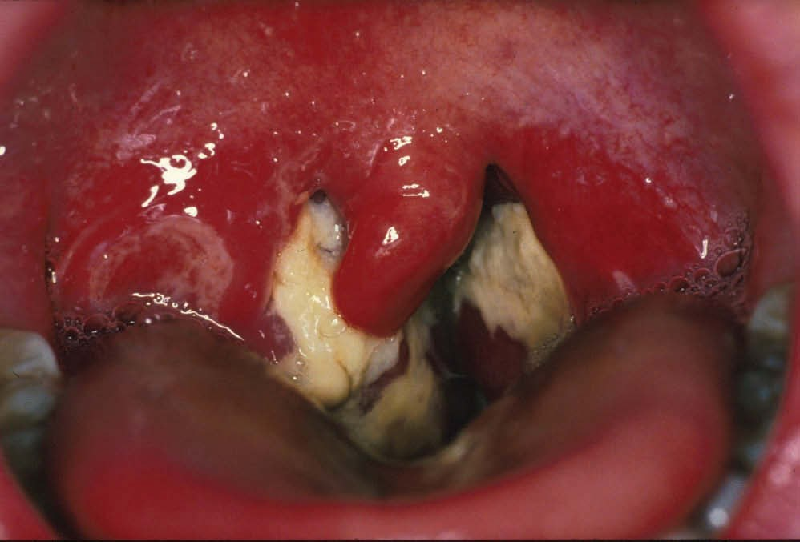
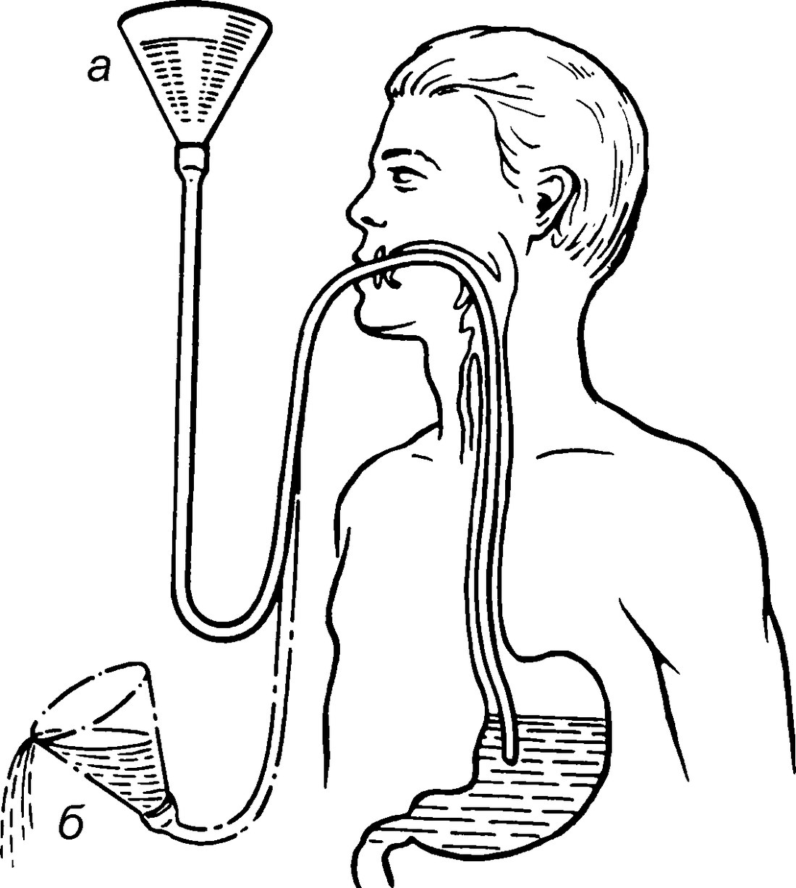

Ангины при инфекционных болезнях и заболеваниях крови
Ангины при острых инфекционных заболеваниях
В данном разделе рассматриваются глоточные проявления при детских инфекциях, а также при некоторых других острых инфекционных заболеваниях. по: Бабияк и соавт., т. 1, с. 508
Нередко ангина бывает одним из проявлений острого инфекционного заболевания. Изменения в глотке неспецифические и могут носить разнообразный характер: от катаральных до некротических и даже гангренозных, поэтому при развитии ангины всегда следует помнить, что она может оказаться начальным симптомом какого-либо острого инфекционного заболевания. по: Нац. руководство, 2016, с. 778
При некоторых острых инфекционных заболеваниях развивается воспаление компонентов лимфаденоидного глоточного кольца — чаще нёбных миндалин, которое может быть одним из первых признаков болезни. Поэтому при возникновении любых форм ангины необходимо иметь в виду, что она может явиться начальным симптомом какого-либо инфекционного заболевания, особенно в детском возрасте. по: Пальчун, Магомедов, Лучихин, учебник, с. 262–263
Вторичные тонзиллиты — воспалительные заболевания глотки при острых инфекционных заболеваниях. по: Богомильский, Чистякова, с. 277
Дифтерия
Определение и история
Дифтерия (от греч. diphthera — кожа, плёнка) — острое инфекционное заболевание, протекающее с явлениями интоксикации, воспалительного процесса в зеве, глотке, реже — в гортани, трахее, носу и других органах с образованием налётов, сливающихся с некротизированной тканью поражённых слизистых оболочек.
При токсических формах поражается сердце и периферическая нервная система.
История
Впервые клинические признаки дифтерии описал в I в. н. э. сирийский врач Аретей Каппадокийский, и на протяжении нескольких веков дифтерию называли «сирийской болезнью» или «сирийскими язвами». В 1826 г. французский врач Бретоно (Bretonneau) дал полное описание клинических проявлений заболевания, которое он назвал дифтеритом. Его ученик Труссо1 (A. Trousseau) на основании наблюдений, сделанных во время эпидемии дифтерии в Париже в 1846 г., дал название «дифтерия», что подчёркивало роль общих явлений этого острого инфекционного заболевания. В 1883 г. Клебс (E. Klebs) обнаружил возбудителя дифтерии в срезах дифтерийной плёнки, а в 1884 г. Леффлер (F. Löffler) выделил его в чистой культуре. В 1892 г. Я. Ю. Бардах и Е. Беринг (E. Bering) независимо друг от друга получили антитоксическую противодифтерийную сыворотку, сыгравшую огромную роль в профилактике заболевания. по: Бабияк и соавт., т. 1, с. 508
Этиологию дифтерии установили Э. Клебс, обнаруживший в 1883 г. дифтерийную палочку в срезах пленок из зева больного, и Ф. Леффлер, выделивший в 1884 г. этот же возбудитель в чистой культуре. по: Богомильский, Чистякова, с. 277
Основное патогенное воздействие на организм оказывает экзотоксин, который относится к сильнодействующим ядам, уступает лишь ботулиническому и столбнячному. Выделяют локализованную (островчатую и плёнчатую), распространённую и токсическую дифтерию. Реже встречаются дифтерия носа и гортани (круп). по: Чарушин и соавт., с. 76
Существует три типа дифтерийных микробов — gravis, intermedius, mitis. Тип gravis вызывает тяжелые формы дифтерии. При легких формах заболевания и у здоровых носителей найдены mitis, а в случае умеренно тяжелого клинического течения — тип intermedius. Наиболее восприимчивы к дифтерии дети в возрасте от 1 до 5 лет. Часто болеют и дети в возрасте от 5 до 10 лет. В последние годы дифтерией часто стали болеть взрослые, что связано с уменьшением количества проведенных прививок. Многие врачи малознакомы с симптомами дифтерии, что влечет за собой позднюю диагностику, отсутствие своевременного специфического лечения и даже смерть больных. по: Заболотный и соавт., с. 324
Этиология и эпидемиология
Возбудителем дифтерии является дифтерийная палочка (Corynebacterium diphtheriae), продуцирующая токсин, обладающий выраженным нейротропным действием, поражающим также слизистую оболочку и подслизистый слой различных полых органов. Имеются также нетоксигенные дифтерийные палочки, которые не опасны для человека.
Источником возбудителя инфекции является больной человек или бациллоноситель токсигенной палочки дифтерии. Инфекция передаётся воздушно-капельным путём: при кашле, чихании, разговоре, с каплями слюны, мокроты. Возбудитель весьма стоек во внешней среде, поэтому заражение происходит через различные предметы, зараженные больным (бельё, посуда, игрушки и др.). Больной заразен в последние дни инкубационного периода и в течение всего периода болезни до освобождения от возбудителя. За последние 3–4 десятилетия в связи с проведением массовых профилактических прививок заболеваемость дифтерией и частота токсигенного бактерионосительства на территории бывшего СССР и в России резко снизились, однако единичные вспышки всё ещё возникают. по: Бабияк и соавт., т. 1, с. 508–509
Анализ последней эпидемии дифтерии в стране показал, что после многих лет благополучия по дифтерии сформировался неиммунный контингент взрослого населения (до 70%), в связи с чем возросла заболеваемость наиболее тяжелыми формами у людей старше 40 лет (по выражению инфекционистов, «болезнь постарела»). Изменился штамм возбудителя дифтерии, чаще стала выявляться Corynebacterium gravis, реже mitis, чему в значительной степени способствовали социальные потрясения и усиление миграции населения. по: Богомильский, Чистякова, с. 277
Патогенез и патологическая анатомия
Входными воротами для возбудителей инфекции обычно являются верхние дыхательные пути, но возможно их проникновение через кожу, половые органы, глаза и др. В месте внедрения возбудителя возникает очаг фибринозного воспаления, из которого в организм поступает выделяемый палочкой токсин. В процесс вовлекаются близлежащие лимфоузлы, которые увеличиваются в размерах. При токсической форме появляется отёк подкожной клетчатки. После перенесённой дифтерии развивается специфический иммунитет. по: Бабияк и соавт., т. 1, с. 509
Особенно чувствительны к токсину слизистые оболочки, на которых обычно и развивается характерный для дифтерии патологический процесс. по: Богомильский, Чистякова, с. 277
В патологической картине дифтерии можно выделить изменения, наблюдаемые в очаге первичной фиксации возбудителя (глотки), и изменения во всем организме, обусловленные действием дифтерийного токсина. У больных дифтерией ротовой части глотки наблюдается отек, гиперемия мягких тканей глотки, налеты на миндалинах желтовато-белого или серовато-белого цвета. Налеты возникают вследствие дифтерийного воспаления, которое сопровождается набуханием и распадом эпителия, сосредоточением в межклеточном пространстве плотной сетки фибрина. Нередко дифтерийное воспаление распространяется на прилегающие участки: нёбные дужки, мягкое небо, слизистую оболочку задней стенки глотки, а также носовую полость, гортань, трахею, бронхи. Иногда дифтерийная палочка вызывает не фибринозное, а катаральное воспаление слизистой оболочки, что наблюдается в случае наиболее легких форм заболевания и значительно затрудняет диагностику. К местным проявлениям дифтерии следует отнести поражение регионарных лимфоузлов и коллатеральный воспалительно-токсический отек подкожной жировой клетчатки шеи. К изменениям, вызванным общей дифтерийной интоксикацией, относятся в первую очередь изменения в надпочечниках, вызывающие уменьшение выработки адреналина, нарушение периферического нервного аппарата и способствующие развитию парезов и параличей, патологии сердечно-сосудистой системы. Сердечно-сосудистые нарушения обусловлены, с одной стороны, снижением количества адреналина и поражением вегетативной нервной системы, а с другой стороны — действием токсина на мышцы сердца, вследствие чего в миокарде сначала развиваются дистрофические, а затем — воспалительные (миокардит) изменения. по: Заболотный и соавт., с. 324–325
Местные и общие клинические симптомы дифтерии обусловлены воздействием на клетки организма человека дифтерийного токсина (экзотоксина), вырабатываемого дифтерийной бациллой в местах ее колонизации на покровных тканях (слизистой оболочке дыхательных путей, глаз, вульвовагинальной области, коже). В зоне колонизации дифтерийной бациллы отмечают повреждение токсином всех тканей, включая мышцы, нервные структуры, сосуды. На слизистой оболочке возникает коагуляционный некроз эпителия, подлежащие сосуды расширяются, становятся проницаемыми, в них возникает стаз. Из сосудов пропотевает жидкий экссудат, содержащий фибриноген, образующий фибринозную пленку. На слизистых оболочках с многослойным эпителием в глотке, гортани возникает дифтерийное воспаление, при котором налет плотно спаян с тканью, лежащей под эпителием. В трахее, бронхах развивается крупозное воспаление, при котором фибринозный налет не спаивается с подлежащей тканью. При лимфогенном распространении токсина развиваются отек миндалин, слизистой оболочки глотки, подкожной клетчатки шеи, лица, грудной клетки, поражение регионарных лимфатических узлов. по: Пальчун, учебник для колледжей, с. 298–299
Клиническая картина
Инкубационный период — от 2 до 10 дней, чаще 5 дней. В зависимости от локализации процесса наблюдается большое разнообразие клинических форм болезни. Принято различать дифтерию зева, носа, гортани, трахеи, бронхов, глаз, наружных половых органов и др. Дифтерия зева является наиболее частой формой заболевания. по: Бабияк и соавт., т. 1, с. 509
Дифтерия глотки наблюдается в 70–90% всех случаев дифтерии. Принято считать, что это заболевание бывает чаще у детей, однако наблюдающийся в последние два десятилетия рост заболеваемости дифтерией в России отмечается преимущественно за счёт неиммунизированных взрослых. Тяжело болеют дети первых лет жизни и взрослые старше 40 лет. Заболевание вызывает дифтерийная палочка — бацилла рода Corynebacterium diphtheriae, её наиболее вирулентные биотипы, такие как gravis и intermedius. Источником инфекции выступает больной дифтерией или бактерионоситель токсигенных штаммов возбудителя. После перенесённого заболевания реконвалесценты продолжают выделять дифтерийные палочки, но у большинства из них в течение 3 нед носительство прекращается. Освобождению реконвалесцентов от дифтерийных бактерий может препятствовать наличие хронических очагов инфекции в области верхних дыхательных путей и снижение общей сопротивляемости организма.
По распространённости патологического процесса выделяют локализованную и распространённую формы дифтерии; по характеру локальных изменений в глотке различают катаральную, островчатую, плёнчатую и геморрагическую формы; в зависимости от тяжести течения — токсическую и гипертоксическую. Инкубационный период длится от 2 до 7, редко до 10 дней. При лёгких формах дифтерии преобладают местные симптомы, заболевание протекает как ангина. При тяжёлых формах наряду с местными симптомами быстро развиваются и признаки интоксикации вследствие образования значительного количества токсина и массивного поступления его в кровь и лимфу. Лёгкие формы дифтерии наблюдаются обычно у привитых, тяжёлые — у людей, у которых иммунная защита отсутствует. по: Нац. руководство, 2016, с. 778
На дифтерию глотки приходится до 90–95% случаев заболеваемости. Легкими формами дифтерии глотки могут болеть привитые, тяжелыми формами — люди с отсутствием иммунной защиты. по: Пальчун, учебник для колледжей, с. 299
Клиническая картина дифтерии ротоглотки характеризуется наличием двух синдромов — общетоксического (слабость, головная боль, вялость, бледность, анорексия, рвота) и местного — гипертрофия миндалин и появление налётов на них. Особенности дифтерийных налётов: плотная консистенция; тенденция к распространению; снимаются с трудом, после снятия подлежащая ткань кровоточит; не растираются между предметными стёклами, в воде не растворяются, тонут; цвет сероватый, белый, грязно-серый; миндалины гипертрофированы, приобретают шарообразную форму; подлежащие ткани отёчны; гиперемия слизистой ротоглотки неяркая, с цианотичным оттенком и чёткими границами; увеличение и болезненность регионарных (подчелюстных) лимфатических узлов. по: Чарушин и соавт., с. 76–77
С первых часов беспокоит боль в горле, которая значительно усиливается на вторые сутки. Речь у больного невнятная, изо рта характерный противно-сладковатый запах. Несмотря на повышенную температуру, кожа лица бледная, в то время как у больных с банальной лакунарной или фолликулярной ангиной имеется лихорадочный румянец на щеках, яркие сухие губы. Регионарные лимфатические узлы умеренно увеличены и слегка болезненны. При фарингоскопии отмечается отечность миндалин и нёбных дужек, неяркая гиперемия с цианотичным оттенком. по: Пальчун, Магомедов, Лучихин, учебник, с. 263
Чаще встречается двустороннее поражение, флегмонозная форма может быть односторонней. по: Богомильский, Чистякова, с. 277–278
Локализованная дифтерия
Локализованная дифтерия зева характеризуется слабовыраженными симптомами интоксикации. Частота этого вида дифтерии в первой половине XX в. составляла 70–80%. Болезнь начинается общим недомоганием, слабостью, плохим аппетитом, повышением температуры тела до 38 °C. по: Бабияк и соавт., т. 1, с. 509
Дети иногда локализуют боль в зубах, ухе, голове. по: Богомильский, Чистякова, с. 277–278
Налет обычно формируется на каком-то участке миндалины, чаще на миндалине бывает 2–3 пленки. Может быть поражение двух миндалин, но разной выраженности. Длительность существования налетов 6–8, иногда 10–12 сут. Начало при локализованной форме острое, отмечают повышение температуры до 38–39 °С, умеренно выраженные симптомы интоксикации: головную боль, недомогание, снижение аппетита, бледность кожи. по: Пальчун, учебник для колледжей, с. 299–300
После введения противодифтерийной сыворотки через одни сутки резко улучшается общее состояние больного, температура тела нормализуется, налёты становятся более рыхлыми, и через 2–3 дня зев очищается. Без применения сыворотки заболевание может прогрессировать: налёты увеличиваются, возможен переход данной клинической формы в следующие — распространённую или токсическую. Спонтанное излечение может наступить при наиболее лёгких формах дифтерии зева (катаральной и островковой). При плёнчатой форме в нелеченых случаях нередко развиваются осложнения (сердечно-сосудистые расстройства, изолированные парезы токсигенного характера, например парез мягкого нёба, иногда лёгкий полирадикулоневрит).
Плёнчатая форма
При плёнчатой форме обнаруживается небольшое увеличение тонзиллярных (верхних шейных) лимфоузлов, умеренно болезненных при пальпации. Слизистая оболочка зева легко или умеренно гиперемирована, преимущественно в области миндалин. Последние увеличены, слегка гиперемированы, нередко слегка болезненны при глотании. К концу первых или на вторые сутки налёт принимает характерные для дифтерии свойства: он становится серовато-белым или грязно-серым, реже жёлтым с гладкой блестящей поверхностью и чётко очерченными краями, располагается главным образом на выпуклых поверхностях миндалин, выступает над поверхностью слизистой оболочки, плотно спаян с подлежащей тканью, удаляется с трудом, на его месте появляются мелкоточечные кровотечения (симптом кровавой росы), всегда имеет фибринозный характер. по: Бабияк и соавт., т. 1, с. 509–510
Плёнчатая форма сопровождается более глубоким поражением ткани миндалины. Нёбные миндалины увеличены, гиперемированы, умеренно отёчны. На поверхности их образуются сплошные налёты в виде плёнок с характерной окаймляющей зоной гиперемии вокруг. Вначале налёт может иметь вид полупрозрачной розовой плёнки или паутинообразной сетки. Постепенно нежная плёнка пропитывается фибрином и к концу первых (началу вторых) суток становится плотной, беловато-серого цвета с перламутровым блеском. Вначале плёнка отходит легко, в дальнейшем некроз становится всё более глубоким, налёт оказывается плотно спаянным с эпителием нитями фибрина, снимается с трудом, оставляя язвенный дефект и кровоточащую поверхность. по: Нац. руководство, 2016, с. 779
Островчатая форма
При островковой форме на слабо гиперемированных миндалинах обнаруживают плотно спаянные фибринозные налёты. по: Бабияк и соавт., т. 1, с. 509–510
Островчатая форма дифтерии характеризуется появлением единичных или множественных островков фибринозных наложений серовато-белого цвета на поверхности миндалин вне лакун. Налёты с характерной гиперемией слизистой оболочки вокруг них сохраняются в течение 2–5 дней. Субъективные ощущения в глотке слабо выражены, регионарные лимфатические узлы малоболезненные. Температура тела до 37–38 °С, могут отмечаться головная боль, слабость, недомогание. по: Нац. руководство, 2016, с. 779
Катаральная форма
Катаральная форма проявляется умеренным увеличением миндалин и слабой гиперемией слизистой оболочки. Симптомы общей интоксикации выражены незначительно или отсутствуют, температура тела невысокая. Часто такую форму дифтерии принимают за вульгарный катаральный тонзиллит и распознают только на основании бактериологического исследования мазка, взятого с поверхности миндалин, или при прогрессировании клинических проявлений дифтерии. по: Бабияк и соавт., т. 1, с. 509–510
При катаральной форме местные симптомы проявляются неяркой гиперемией с цианотичным оттенком, умеренной отёчностью миндалин и нёбных дужек. Симптомы интоксикации при этой форме дифтерии глотки отсутствуют, температура тела нормальная или субфебрильная. Реакция регионарных лимфатических узлов не выражена. Диагностика катаральной формы дифтерии затруднена, так как отсутствует характерный признак дифтерии — фибринозные налёты. Распознавание этой формы возможно только посредством бактериологического исследования. При катаральной форме может самостоятельно наступить выздоровление, но через 2–3 нед появляются изолированные парезы, обычно мягкого нёба, нерезко выраженные сердечно-сосудистые расстройства. Такие больные опасны в эпидемиологическом отношении. по: Нац. руководство, 2016, с. 779
Распространённая дифтерия
Распространённая дифтерия зева составляла в прошлом веке 3–5% всех поражений зева. Симптомы общей интоксикации более выражены, чем при локализованной дифтерии зева: усиливается общая слабость с появлением признаков апатии, утрачивается аппетит, спонтанная боль и боль при глотании умеренны, слизистая оболочка зева гиперемирована более ярко, чем при локализованной дифтерии зева, отёк её более значителен. Характерные плёнчатые налёты распространяются на другие участки зева, глотки и язычок. В нелеченых случаях или при позднем введении сыворотки чаще наблюдаются характерные для дифтерии осложнения. В настоящее время распространённая дифтерия зева встречается редко. по: Бабияк и соавт., т. 1, с. 510
Может развиться клиническая картина так называемого нисходящего крупа. по: Пальчун, Магомедов, Лучихин, учебник, с. 263–264
Фибринозные налеты имеются на миндалинах, дужках, мягком небе, задней стенке глотки, в полости носа и носоглотке, а у маленьких детей часто и в гортани. Налеты плохо отделяются от подлежащей ткани и после удаления быстро восстанавливаются; на слизистой оболочке полости носа видны серовато-грязные налеты, местами изъязвления, сукровичные выделения. Своевременное лечение способствует очищению слизистой оболочки от налетов в течение 2–3 дней. по: Богомильский, Чистякова, с. 277–278
Токсическая дифтерия
Токсическая дифтерия зева иногда развивается из локализованной, но чаще возникает с самого начала, приобретая выраженные признаки общей интоксикации. Чаще поражает детей в возрасте от 3 до 7 лет. В этом же возрасте возникают наиболее тяжёлые её формы. Токсическая дифтерия обычно достигает полного развития на 2–3-и сутки, причём может прогрессировать ещё в течение 1–2 суток, несмотря на введение больших доз противодифтерийной сыворотки, после этого признаки её идут на убыль. Начинается бурно с высокой температуры тела (39–40 °С), может наблюдаться повторная рвота. Пульс частый, нитевидный, дыхание учащено, поверхностное, лицо бледное. Отмечается общая слабость, вялость, апатия, реже — возбуждение и бред. Тонзиллярные лимфоузлы значительно увеличены, болезненны; вокруг них появляется отёк подкожной клетчатки, который иногда распространяется на значительное расстояние (книзу — до сосков, кзади — на верхнюю часть спины, вверх — на область щёк). Отёк мягкий, тестообразный, безболезненный, на шее образует 2–3 и более толстые складки. Кожные покровы над отёком не изменены.
Одним из ранних и характерных признаков токсической дифтерии является отёк мягких тканей зева, никогда не достигающий выраженной степени при вульгарных фарингитах и тонзиллитах. Иногда при отёке ткани миндалин и мягкого нёба смыкаются, почти не оставляя просвета; дыхание становится шумным, напоминающим храп во сне, голос — гнусавым, изменённого тембра, приём пищи резко затруднён. Гиперемия слизистой оболочки зева чаще носит застойный характер с резко выраженным синюшным оттенком, но может быть и более яркой. Налёт в первые часы тонкий паутинообразный, затем более плотный, грязно-серый, быстро распространяющийся за пределы миндалины на мягкое и твёрдое нёбо, боковые стенки глотки. Нередко процесс распространяется на носоглотку; в этом случае рот открыт, дыхание становится храпящим, появляются обильные серозные, стекловидные выделения из носа, раздражающие кожу в области преддверия носа и верхней губы.
Токсическую дифтерию зева в зависимости от распространённости отёка подкожной клетчатки (служащего критерием классификации), коррелирующего с тяжестью болезни, подразделяют на три степени: I — распространение отёка до второй шейной складки; II — до ключицы и III — ниже ключицы. Наиболее тяжёлые признаки общей интоксикации, доходящие до сопорозного состояния, наблюдаются при III степени. В зависимости от тяжести интоксикационного синдрома и степени выраженности патоморфологических изменений токсическую дифтерию зева подразделяют на субтоксическую, гипертоксическую и геморрагическую формы. по: Бабияк и соавт., т. 1, с. 510–511
Токсическая форма дифтерии глотки — довольно тяжёлое поражение. Начало заболевания обычно острое — больной может назвать час, когда оно возникло. Характерен симптомокомплекс, позволяющий идентифицировать токсическую форму дифтерии ещё до появления характерного отёка подкожной жировой клетчатки шеи: выраженная интоксикация, отёк глотки, реакция регионарных лимфатических узлов, болевой синдром. Выраженная интоксикация проявляется повышением температуры тела до 39–40 °С и сохранением на этом уровне более 5 сут, головной болью, ознобом, выраженной слабостью, анорексией, бледностью кожных покровов, адинамией. Больной отмечает боль при глотании, слюнотечение, затруднение дыхания, приторно-сладковатый запах изо рта, открытую гнусавость. Пульс частый, слабый, аритмичный. Отёк глотки начинается с миндалин, распространяется на дужки, язычок мягкого нёба, на мягкое и твёрдое нёбо, паратонзиллярное пространство. Отёк диффузный, без резких границ и выбуханий. Слизистая оболочка над отёком интенсивно гиперемирована, с цианотичным оттенком. На поверхности увеличенных миндалин и отёчного нёба можно увидеть сероватую паутину или желеобразную полупрозрачную плёнку. Налёты распространяются на нёбо, корень языка, слизистую оболочку щёк. Регионарные лимфатические узлы увеличенные, плотные, болезненные. Если они достигают размеров куриного яйца, это свидетельствует о гипертоксической форме. по: Нац. руководство, 2016, с. 779
Отек подкожной клетчатки шеи безболезненный, тестообразной консистенции, появляется раньше всего над регионарными лимфатическими узлами, затем может распространяться вверх на лицо, затылок, спину, шею, живот вплоть до пупка. Установление границ отека, достигшего максимального развития, позволяет определить форму токсической дифтерии. Если отек есть только в глотке — это эдематозная форма субтоксической дифтерии; если он расположен над регионарными лимфатическими узлами в подкожной клетчатке шеи, это субтоксическая форма. Иногда может наступить летальный исход от тяжелой интоксикации с признаками коллапса, без выраженного местного воспаления. по: Пальчун, учебник для колледжей, с. 300–301
Возможен геморрагический синдром, в дальнейшем — инфекционно-токсический шок. по: Чарушин и соавт., с. 77–78
Прогноз при выраженной токсической форме крайне неблагоприятный. по: Богомильский, Чистякова, с. 278–279
Субтоксическая форма
При субтоксической форме описанные ранее признаки проявляются в редуцированном виде.
Гипертоксическая форма
Гипертоксическая форма начинается бурно с высокой температурой, повторной рвотой, бредом, судорогами. При этом местные проявления дифтерии могут быть умеренными. Явления общей интоксикации преобладают над морфологическими изменениями; наблюдается адинамия, спутанное сознание, выраженная слабость сердечной деятельности с гемодинамическими нарушениями; сопор, переходящий в кому. Смерть наступает в течение первых 2–3 суток. по: Бабияк и соавт., т. 1, с. 511–512
Гипертоксическая молниеносная дифтерия представляет собой наиболее тяжёлую форму, развивающуюся, как правило, у больных старше 40 лет, представителей «неиммунного» контингента. Она характеризуется бурным началом с быстрым нарастанием тяжёлых признаков интоксикации: высокая температура, многократная рвота, нарушение сознания, бред, гемодинамические расстройства по типу коллапса. Одновременно развивается значительный отёк мягких тканей глотки и шеи с развитием явлений фарингеального стеноза. Отмечается вынужденное положение тела, тризм, быстро нарастающий студневидный отёк слизистой оболочки глотки с чёткой демаркационной зоной, отделяющей его от окружающих тканей. по: Нац. руководство, 2016, с. 779–780
Миндалины практически не видны из-за отека, оттеснены вниз, покрыты черным геморрагическим налетом. Нарушение гемостаза у этих больных обычно обусловлено снижением количества тромбоцитов. по: Богомильский, Чистякова, с. 278–279
Геморрагическая форма
Геморрагическая форма характеризуется присоединением к клинической картине токсической дифтерии (чаще III степени) геморрагических явлений. Налёты приобретают геморрагический оттенок, пропитываются лизированной кровью, появляются кровоизлияния под кожу, носовые, глоточные, пищеводные, желудочные, кишечные, маточные кровотечения. Как правило, при этой форме заболевание кончается смертью, несмотря на своевременно предпринятое и правильное лечение. по: Бабияк и соавт., т. 1, с. 511–512
Формы дифтерии глотки по распространённости отёка
Форму дифтерии глотки учебник определяет по тому, докуда распространился отек, когда он достиг максимального развития. Эта зависимость сведена в таблицу.
Таблица 2. Формы дифтерии глотки по распространенности отека (составлено по: Пальчун, учебник для колледжей, с. 299–301)
| Форма | Граница отека | Интоксикация |
|---|---|---|
| Катаральная | Умеренная отечность миндалин и нёбных дужек; налетов нет | Нет; температура нормальная или субфебрильная |
| Локализованная | Умеренно отечные миндалины с пленками | Умеренная; температура 38–39 °С |
| Субтоксическая, эдематозная | Отек только в глотке | Выраженная |
| Субтоксическая | Над регионарными лимфатическими узлами в подкожной клетчатке шеи | Выраженная |
| Токсическая I степени | До середины шеи | Выраженная; температура 39–40 °С более 5 сут |
| Токсическая II степени | До ключицы | Выраженная |
| Токсическая III степени | Ниже ключицы | Выраженная |
| Гипертоксическая (молниеносная) | Местное воспаление может быть не выражено; лимфатические узлы размером с куриное яйцо | Бурное начало, многократная рвота, нарушение сознания, коллапс |
Дифтерийный круп
У детей дифтерийный круп развивается постепенно. Стадии крупа: I — крупозный кашель; II — стеноз; III — асфиксия. В переходный период от стадии стеноза к стадии асфиксии отмечают резкое беспокойство — ребенок вскакивает, ложится, просится на руки, мечется в постели; появляются акроцианоз, холодный пот. Пульс во время вдоха слабеет или совсем выпадает, при выдохе вновь появляется. Стадия стеноза до асфиксии длится сутки, иногда может быть короткой и составлять всего несколько часов. по: Пальчун, учебник для колледжей, с. 301
Осложнения
Осложнения при дифтерии зева возникают главным образом при токсической её форме. К ним относятся миокардиты (слабость сердечной деятельности, изменения на ЭКГ, ФКГ), моно- и полиневриты, проявляющиеся периодически возникающими параличами нёбной занавески (открытая гнусавость, попадание жидкой пищи в нос), глазных мышц (косоглазие, диплопия), мышц конечностей и туловища, а также нефротоксический синдром (белок в моче, явления уремии, почечные отёки). Нередко при тяжёлых формах дифтерии развивается пневмония, обычно стрептококковой этиологии. У взрослых возможно возникновение и токсической формы дифтерии. по: Бабияк и соавт., т. 1, с. 512
Осложнения при дифтерии связаны со специфическим действием токсина. Наиболее опасными бывают осложнения со стороны сердечно-сосудистой системы, которые могут возникать при всех формах дифтерии, но чаще при токсической, особенно II и III степени. Второе место по частоте занимают периферические параличи, которые обычно носят характер полиневритов. Они могут возникнуть и при абортивно протекающих случаях дифтерии, их частота составляет 8–10%. Наиболее часто наблюдается паралич мягкого нёба, связанный с поражением глоточных ветвей блуждающего и языкоглоточного нервов. При этом речь принимает гнусавый, носовой оттенок, жидкая пища попадает в нос, нёбная занавеска вяло свисает, неподвижна при фонации. Реже наблюдаются параличи мышц конечностей (нижних в 2 раза чаще), ещё реже параличи отводящих нервов, вызывающие сходящееся косоглазие. Утраченные функции обычно полностью восстанавливаются через 2–3 мес, реже через более длительные сроки. У детей раннего возраста, а при тяжёлом течении и у взрослых, тяжёлым осложнением может быть развитие стеноза гортани и асфиксия при дифтерийном (истинном) крупе. по: Нац. руководство, 2016, с. 780
Из других осложнений наиболее опасно развитие стенозирования дыхательных путей, особенно в детском возрасте (дифтеритический круп), требующего интубации или трахеотомии. по: Пальчун, Магомедов, Лучихин, учебник, с. 265
Периферические параличи бывают ранними (1–2 нед) — раньше всего появляется паралич мягкого неба, подвижность которого нарушается, пища при глотании попадает в нос, голос приобретает гнусавый оттенок (открытая гнусавость — rhinolalia aperta) и поздними (3–4 нед). Профилактика: прививки с применением нативного или адсорбированного анатоксина; выявление и лечение бациллоносителей дифтерии (свободным от бациллоносительства после лечения считается ребенок после троекратного отрицательного анализа слизи из глотки и носа); своевременное выявление заболевания, госпитализация и изоляция больного; четкое выполнение общесанитарных мероприятий; повышение общей резистентности. по: Богомильский, Чистякова, с. 280–281
Диагностика и дифференциальная диагностика
Диагноз устанавливают на основании клинической картины, при этом во всех случаях заболевания вульгарной ангиной проводят бактериологическое исследование на наличие дифтерийной палочки в мазках и плёнках. Её обнаружение даже при типично протекающей банальной ангине (возможно бациллоносительство) следует трактовать как дифтерию зева со всеми вытекающими отсюда противоэпидемическими и лечебными мероприятиями. Материал из зева берут стерильным ватным тампоном на границе между поражённым участком и здоровой слизистой оболочкой натощак или спустя 2 ч после еды.
Дифференциальный диагноз имеет исключительное значение, поскольку от тщательности его проведения зависит не только состояние здоровья больного, но и здоровье окружающих. В современных условиях плановой иммунизации населения дифтерия, как правило, не протекает в классических формах, а нередко маскируется под банальные формы ангин, являясь источником массивного распространения палочки дифтерии. Дифтерию дифференцируют с ложноплёнчатыми ангинами, особенно дифтероидной и пневмококковой этиологии; с ангиной Симановского — Плаута — Венсана, герпетической ангиной в фазе изъязвления, лакунарной ангиной, глоточными изменениями при скарлатине в первые 2–3 дня заболевания до появления экзантем или с изменениями в глотке при токсической форме скарлатины, ангинами при заболеваниях крови, сифилитическими изменениями в глотке, микотическими поражениями глотки. по: Бабияк и соавт., т. 1, с. 512
Дифференцируют преимущественно с ангинами другого происхождения (табл. 1). Иногда за дифтерию зева можно принять молочницу у детей до 2–3 лет и афтозный стоматит, распространяющийся на миндалины. по: Богомильский, Чистякова, с. 278–279
Так же как и при скарлатине, очень часто признаков поражения глотки недостаточно для дифференциальной диагностики. Это связано с тем, что при дифтерии налеты выходят за пределы дужек. Нельзя абсолютизировать и бактериологическое исследование, поскольку при типичной дифтерии палочка Леффлера может и не присутствовать в посеве и, наоборот, очень часто высевается при типичной ангине. по: Солдатов, Гофман, гл. 3
Все виды ангин следует считать подозрительными на дифтерию, тем более при наличии налетов. Пленка толстая, удаляется с трудом, не растирается на предметном стекле, опускается на дно сосуда с жидкостью — тонет. Температура тела при дифтерии чаще ниже, чем при банальной ангине, в то время как общее состояние тяжелое, прогрессивно ухудшается. Диагноз можно подтвердить бактериологическим исследованием мазков, взятых из участков поражения. Мазок или лучше кусочек пленки следует брать с периферических отделов налета, где обсемененность выше. по: Пальчун, Магомедов, Лучихин, учебник, с. 264–265
Чрезвычайно важным является своевременная диагностика дифтерии (до 4-го дня болезни включительно) для эффективной специфической терапии заболевания — введения противодифтерийной сыворотки в адекватных дозах. Диагностическими критериями дифтерии являются: отсутствие вакцинации против дифтерии, эпидемиологический анамнез; наличие характерных плотных налётов, распространяющихся за пределы миндалин; отёк в зеве и подкожной клетчатке шеи; лабораторное подтверждение диагноза. Золотым стандартом диагностики дифтерии является культуральное (бактериологическое) исследование мазков, взятых с места поражения (элективные среды Леффлера, Клауберга). Биологический материал забирается до начала лечения и помещается в транспортную среду (полужидкий агар с теллуритом). Возможно использование молекулярно-биологических методов (ПЦР). При подозрении на дифтерию необходимы: изоляция больного; консультация врача-инфекциониста и ЛОР-врача; забор материала из очага поражения (налёты). Лечение больного дифтерией проводится в боксированном отделении специализированного инфекционного стационара. по: Чарушин и соавт., с. 79
В постановке диагноза большое значение имеет выявление в мазках из глотки бактерий дифтерии. Ориентировочные данные получают через 1–2 ч после бактериоскопического исследования материала, взятого из глотки и носовой полости. Окончательный результат через 48 ч дает посев взятого материала. Однако иногда при дифтерии возможен отрицательный результат посева. Поэтому врач должен оценить клиническую картину и эпидемиологическую обстановку перед принятием решения о введении противодифтерийной сыворотки. Больных выписывают из стационара после полного исчезновения всех патологических изменений и при отсутствии в мазках дифтерийной палочки после двукратного исследования. Важным звеном в предотвращении дифтерии является недопущение бациллоносителей в детские учреждения, пищеблок, хирургические и родильные отделения, их активное лечение антибиотиками. по: Заболотный и соавт., с. 327
Дифтерию глотки дифференцируют от фолликулярной, лакунарной, флегмонозной ангин, ангины Симановского — Плаута — Венсана, инфекционного мононуклеоза. При дифтерии налеты располагаются на поверхности гиперемированной слизистой оболочки, имеют вид «плюс ткани». Налеты плотные, блестящие, рельеф миндалин сглажен из-за отека. Ангина Симановского — Плаута — Венсана может протекать как язвенно-некротическая и язвенно-пленчатая. Для этой ангины характерно одностороннее поражение миндалин и лимфатических узлов. Общее состояние больного почти не нарушено. Наличие веретенообразных палочек и спирохет в мазке на предметном стекле при бактериоскопии уточняет диагноз. Для инфекционного мононуклеоза характерны появление в периферической крови большого количества лимфоцитов, атипичных мононуклеаров, уменьшение процента сегментоядерных нейтрофилов.
По клиническим данным устанавливают предварительный диагноз дифтерии, на основании которого больного госпитализируют в инфекционное отделение и начинают лечение. При проведении анализа на дифтерию забирают слизь и пленки из глотки, для этого используют стерильные сухие ватные тампоны на палочках из дерева или из нержавеющего металла. Материал собирают до приема пищи или спустя не менее 2 ч, а также до полоскания и других видов местного лечения. Слизь снимают вращательными движениями тампона со слизистой оболочки глотки, не касаясь слизистых оболочек рта, языка, щек. При налетах слизь собирают как с пораженных, так и с прилегающих к ним здоровых тканей. В лабораторию посылают небольшую часть удаленной пленки, тщательно растертой между стеклами. В течение 2–3 ч слизь и пленка должны быть доставлены в лабораторию. Если это условие невыполнимо, на месте проводят посев в чашки Петри с элективной средой либо в транспортную среду и доставляют в лабораторию. В лаборатории смотрят окрашенные мазки на стеклах: бациллы дифтерии имеют вид палочек, расположенных попарно под острым углом.
Таблица 1. Дифференциальная диагностика дифтерии глотки и ангин (по данным руководства Богомильского и Чистяковой, табл. 4.1, с. 279)
| Признак | Дифтерия глотки | Ангины |
|---|---|---|
| Налеты | Расположены на поверхности миндалин. Распространяются за пределы миндалин. Снимаются с трудом, оставляя кровоточащую поверхность | Расположены в глубине лакун. Находятся в пределах свободной поверхности миндалин (за исключением скарлатинозной и язвенно-пленчатой ангины, при которых они могут выходить за пределы миндалин). Поверхностные и легко снимаются |
| Гиперемия и болезненность при глотании | Большей частью незначительные | Выражены |
| Температура тела | Субфебрильная или быстро снижающаяся | Держится, особенно первые 2 дня, около 39–40 °С |
| Пульс | Сначала замедлен, затем учащен, поверхностный и аритмичный | Соответствует температуре тела |
| Общее состояние | Тяжелое, прогрессивно ухудшающееся (особенно при токсической форме) | Обычно не очень тяжелое |
| Состояние регионарных шейных лимфатических узлов | Болезненность и припухлость. При токсической дифтерии отечность подкожной клетчатки шеи | Болезненность и припухлость |
| Бактериологическое исследование налетов | Коринебактерия дифтерии | В редких случаях может быть носительство коринебактерии (дифференциальная диагностика в таких случаях должна основываться на тщательном клиническом наблюдении, эффекте сывороточной терапии и учете эпидемиологических данных) |
Бактерионосительство
При носительстве бактерий дифтерии дифтерийную палочку выделяют у человека с отсутствием симптомов болезни. Носительство может быть токсигенным и нетоксигенным. Роль нетоксигенного носительства изучена мало. Бактерионосительство обусловлено способностью коринебактерий дифтерии вегетировать на покровных тканях человека при противодифтерийном антитоксическом иммунитете. Возникновение носительства возможно в любом возрасте, но более распространено у детей. Наиболее эффективен при лечении носительства эритромицин по 2 г в сутки, при этом курс лечения составляет 7 дней. В качестве альтернативных препаратов можно использовать бензилпенициллин прокаина в дозе 500 000–600 000 ЕД внутримышечно 2 раза в сутки в течение 7 дней, клиндамицин по 150 мг 4 раза в сутки внутрь в течение 7 дней, рифампицин по 600 мг 1 раз в сутки 7 дней. Недостаточно эффективны при носительстве дифтерийной палочки препараты тетрациклинового ряда, синтетические пенициллины, аминогликозиды, цефалоспорины, принимаемые внутрь. Если возбудитель не исчезает после одного курса лечения, рекомендуют провести повторный курс лечения. Если после повторных курсов бактерионосительство не прекращается, показана двусторонняя тонзиллэктомия. по: Пальчун, учебник для колледжей, с. 301–302
Лечение
При токсических формах проводят дезинтоксикационную терапию (внутривенное введение плазмы, повидона в сочетании с 10% раствором глюкозы, декстрана), а также вводят препараты, улучшающие сердечную деятельность (кокарбоксилаза, витамины группы В, кортикостероиды). При отёках гортаноглотки и гортани, угрожающих удушьем, целесообразно, не дожидаясь асфиксии, выполнять превентивную интубацию или трахеотомию. В настоящее время необходимость в этих вмешательствах возникает исключительно редко, однако необходимо иметь условия для их экстренного проведения. Антибиотики назначают детям с крупом, осложнившимся пневмонией, отитом и другими осложнениями, обусловленными иной бактериальной флорой. по: Бабияк и соавт., т. 1, с. 513
Больные с дифтерией или с подозрением на дифтерию подлежат незамедлительной госпитализации в инфекционный стационар, а в санэпидстанцию направляется экстренное извещение. Специфическое лечение противодифтерийной антитоксической сывороткой рассчитано на нейтрализацию токсина как в очаге его образования, так и свободно циркулирующего в крови. Токсин, связанный с клетками, уже не может быть нейтрализован антитоксической сывороткой, поэтому особое значение имеет раннее применение сыворотки. Сыворотку вводят по способу Безредки. За 1 ч до введения полной лечебной дозы для предотвращения анафилактической реакции подкожно вводят 0,5 мл сыворотки. Далее при локализованной форме дифтерии вводят 10 000–30 000 АЕ, затем через 1–2 дня еще 5000 АЕ. При распространенной форме первая доза 30 000–40 000 АЕ, вторая 10 000 АЕ. При токсической форме общая доза равняется 100 000–200 000 АЕ. по: Пальчун, Магомедов, Лучихин, учебник, с. 265
Назначают витаминотерапию, детоксикационные и симптоматические средства. Для профилактики вторичных осложнений используют антибиотикотерапию, антигистаминные средства. В настоящее время для лечения применяют очищенную от белков и обработанную ферментами сыворотку, которая дает минимальные побочные осложнения. Большинство больных после перенесенного заболевания освобождаются от носительства дифтерийных бацилл, однако 5–10% из них остаются бациллоносителями, хотя без каких-либо клинических проявлений, но опасными для окружающих. по: Пальчун, Магомедов, Лучихин, учебник, с. 266
Сыворотку вводят внутримышечно немедленно после установления диагноза и даже при подозрении на дифтерию. При нетяжелых формах сыворотку обычно применяют однократно, а при налетах повторяют введение через 1–2 сут. Первая доза составляет 1/2 или 1/3 общей дозы на курс лечения. Всю остальную дозу вводят внутримышечно через 1–2 ч. При локализованной форме дифтерии зева и носа общая доза составляет 5000–20 000 АЕ. При распространенной форме дифтерии зева вводят 30 000–40 000 АЕ (первая доза 15 000–20 000 АЕ). При токсической форме дифтерии применяют наибольшие дозы сыворотки (150 000–200 000 АЕ, в ряде случаев до 750 000 АЕ), инъекции производят в течение первых 2–4 дней 1–2 раза в сутки.
При строгом соблюдении постельного режима и щадящей диете повышенной энергетической ценности одновременно проводится активная дезинтоксикационная терапия с внутривенным введением препаратов, а в тяжелых случаях — экстракорпоральная детоксикация (гемосорбция, плазмаферез). Назначают гипосенсибилизирующую, общеукрепляющую терапию, витаминотерапию (витамины С, В1, РР); антибиотики для подавления вторичной инфекции; местное орошение глотки, полоскания щелочными растворами, ингаляционную терапию. Через 7–12 дней после введения сыворотки может развиться сывороточная болезнь: зудящая сыпь, напоминающая крапивницу; артралгия; периферический полиаденит; повышение температуры без резкого нарушения общего состояния. В лечении используют препараты кальция, антигистаминные средства, гормоны. В комплексное лечение гипертоксической формы в связи с развитием тромбоцитопении включают гемостатики. При лечении этой формы дифтерии значительно увеличивают дозу вводимой противодифтерийной сыворотки, в ряде случаев до 750 000 АЕ, на фоне массивной внутривенной дезинтоксикационной терапии одновременно с проведением экстракорпоральной детоксикации (гемосорбция, плазмаферез). При последней эпидемии дифтерии летальность достигла 16,7%, а у больных с гипертоксической формой и крупом — 60%, значительно возросло число осложнений. по: Богомильский, Чистякова, с. 279–280
Перед введением первой лечебной дозы делают внутрикожную пробу на чувствительность, инъецируя 0,1 мл разведенной 1:100 сыворотки, затем вводят полную лечебную дозу. При токсических формах половину лечебной дозы вводят внутримышечно, а другую половину — внутривенно. Внутривенное введение допускают лишь в тех случаях, когда ранее пациент не получал противодифтерийной лошадиной сыворотки. Лечение дифтерии легкой формы ограничивают, как правило, серотерапией. При токсических формах лечение носит комбинированный характер, то есть лечение сывороткой сочетают с дезинтоксикационной терапией (внутривенным введением 5–10% раствора альбумина, декстрана, низкомолекулярного поливинилпирролидона, 10% глюкозы), витаминотерапией (витаминами С, группы В, кокарбоксилазой), дегидратацией (фуросемидом, маннитолом), дезагрегацией и антикоагулянтами (пентоксифиллином, гепарином натрия, никотиновой кислотой), гормонотерапией (гидрокортизоном, преднизолоном), с препаратами антихолинэстеразного действия (неостигмина метилсульфатом, галантамином). Оперативное лечение — трахеостомию при дифтерии гортани — проводят детям при II стадии крупа, взрослым при декомпенсированном стенозе гортани. по: Пальчун, учебник для колледжей, с. 302–303
Прогноз
Исход дифтерии зависит от тяжести болезни, возраста больного, сроков введения противодифтерийной антитоксической сыворотки и правильности проводимого лечения. К концу ХХ в. смертность, благодаря массовой активной иммунизации, резко снизилась, а возникающие случаи заболевания благодаря современному специфическому, антибактериальному и терапевтическому лечению протекают в лёгкой и субтоксической формах. Основным методом является введение противодифтерийной антитоксической сыворотки. В. П. Лебедев (1989) рекомендует вводить сыворотку по модифицированному методу Безредки: вначале под кожу вводят 0,1 мл, через 30 мин — 0,2 мл и через 1–1,5 ч — остальную дозу внутримышечно (в наружно-верхний квадрант ягодицы или в передние мышцы бедра). Сыворотку дозируют в антитоксических единицах (АЕ). Количество вводимого препарата зависит от тяжести заболевания и времени от начала заболевания (общая доза в течение 2–4 суток): 10–30 тыс. АЕ — при локализованной форме; 100–350 тыс.
Профилактика
Профилактика дифтерии в развитых странах носит плановый характер и осуществляется в соответствии с положением об обязательном проведении календарных прививок всему детскому населению. Для выявления выделителей (бациллоносителей) палочки дифтерии бактериологическому обследованию подлежат лица и дети (абитуриенты), поступающие в детские учреждения. В отношении носителей палочки дифтерии и лиц, имевших контакт с больным дифтерией, выполняют мероприятия, предусмотренные соответствующими инструкциями. В очаге проводят заключительную дезинфекцию. по: Бабияк и соавт., т. 1, с. 512–513
Дифтерию относят к управляемой инфекции. Выработку защитных механизмов против дифтерии начинают с трехмесячного возраста серией прививок дифтерийным анатоксином, входящим в состав комбинированных препаратов АКДС, АДС-н, АДС-м. Ревакцинацию проводят в год, затем перед поступлением в школу. Последующие ревакцинации осуществляют в возрасте 16 лет и каждые 10 лет. Если незащищенный (неиммунизированный) человек имел контакт с больным дифтерией, следует либо ввести 3000 ЕД противодифтерийной лошадиной сыворотки внутримышечно после пробы на чувствительность и через 6 нед провести активную иммунизацию сывороткой, либо первую серию прививок с последующей консультацией инфекциониста. Если в очаг инфекции попал ранее иммунизированный человек, достаточно провести ревакцинацию. Ликвидировать эпидемию дифтерии можно только при условии, если 95% населения защищены, то есть имеют в организме антитоксические антитела. по: Пальчун, учебник для колледжей, с. 303
Скарлатина
Скарлатина (от лат. scarlatium — ярко-красный цвет) — острая инфекционная болезнь, характеризующаяся циклическим течением, общей интоксикацией, ангиной, мелкоточечной сыпью и наклонностью к гнойно-септическим осложнениям.
История
В конце XVII в. Сиденгем (T. Sydenham) дал этой болезни название «scarlatina» и первым привёл её точное клиническое описание. по: Бабияк и соавт., т. 1, с. 513
Скарлатина — единственное инфекционное заболевание, которым можно заразиться при непрямом контакте. На фоне выраженного интоксикационного синдрома и высокой лихорадки при скарлатине развивается острый тонзиллит — катаральный, фолликулярный, лакунарный или некротический. Отличительной особенностью его является яркая гиперемия ротоглотки («пылающий зев»), резко ограниченная в месте перехода слизистой оболочки на твёрдое нёбо, и точечная энантема на мягком нёбе. по: Чарушин и соавт., с. 79–80
Воспалительные изменения в глотке возникают обычно до появления сыпи, часто одновременно с рвотой и сопровождаются головной болью, повышением температуры до 38–40 °С. Уже в первые часы заболевания отмечается резкая гиперемия слизистой оболочки глотки, распространяющаяся на твердое нёбо, где иногда наблюдается резкая ограничительная линия; к 3–4 дню язык становится ярко-красным с выступающими сосочками (малиновый). В последующем процесс локализуется на нёбных миндалинах, где наблюдается воспалительная реакция в широком диапазоне — от катаральной до гнойно-геморрагической ангины. Нёбные миндалины отечны, покрыты серовато-грязным налетом, который, в отличие от такового при дифтерии, не носит сплошной характер и легко снимается. Ангина при скарлатине чаще наблюдается у детей и протекает бурно, с выраженной интоксикацией, могут наблюдаться судороги, потеря сознания. по: Пальчун, Магомедов, Лучихин, учебник, с. 266–267
Эпидемиология и этиология
Скарлатина распространена во всех странах мира. Источником инфекции являются больные скарлатиной, стрептококковыми ангинами и назофарингитом (заразен на протяжении всей болезни), носители гемолитического стрептококка группы А. Применение пенициллина через 7–10 дней приводит к освобождению от стрептококка, и больной становится безопасным для окружающих. При возникновении осложнений сроки заразного периода удлиняются. Большую эпидемиологическую опасность представляют больные с нераспознанными лёгкими и атипичными формами скарлатины. Заражение происходит только на близком расстоянии от больного, например при пребывании с ним в одной комнате (палате), так как стрептококки, несмотря на свою жизнеспособность, быстро теряют патогенность и контагиозность вне организма. Наиболее часто скарлатина наблюдается у детей дошкольного и школьного возраста. Максимум заболеваемости отмечается в осенне-зимний период.
Иммунитет против скарлатины характеризуется антитоксическим и антимикробным действием и вырабатывается в результате перенесенного заболевания, а также при так называемой бытовой иммунизации, обусловленной повторными стрептококковыми инфекциями, протекающими в легкой и нередко в субклини ческой форме. При недостаточной силе иммунитета возникают повторные случаи скарлатины, частота которых в конце ХХ в. увеличилась.
Возбудителем скарлатины является токсигенный β-гемолитический стрептококк группы А. Патогенез. Входными воротами для инфекции при возникновении скарлатинозной ангины служит слизистая оболочка миндалин. По лимфатическим и кровеносным сосудам возбудитель попадает в регионарные лимфоузлы, вызывая их воспаление. Токсин возбудителя, проникая в кровь, в первые 2–4 дня вызывает выраженные токсические симптомы (лихорадка, сыпь, головная боль и др.). В это же время повышается чувствительность организма к белковому компоненту микроба, что может проявиться через 2–3 недели так называемыми аллергическими волнами (уртикарная сыпь, отёчность лица, эозинофилия и др.), которые особенно ярко выражены у детей, сенсибилизированных предшествующими стрептококковыми болезнями.
Место первичного внедрения скарлатинозного возбудителя, по предложению Пирке, называют первичным скарлатинозным аффектом; нёбные миндалины, по данным М. А. Скворцова (1946), в 97% случаев им являются. Процесс начинается в криптах миндалин, где обнаруживается экссудат и скопление стрептококков. Затем в окружающей крипты паренхиме образуется зона некроза, содержащая большое количество возбудителей, которые внедряются в здоровую ткань и обусловливают дальнейшее разрушение миндалины. Если процесс некроза останавливается, на его границе образуется реактивный лейкоцитарный вал (миелоидная метаплазия лимфаденоидной ткани миндалины), препятствующий дальнейшему распространению инфекции. узлы. В регионарных лимфатических узлах наблюдаются те же изменения, что и в первичном аффекте: некроз, отек, фибринозный выпот и миелоидная метаплазия. Очень редко первичный аффект носит характер катарального воспаления, маскирующего истинное заболевание, что резко повышает эпидемиологическую опас ность. Сыпь, столь характерная для скарлатины, в гистологическом отношении не представляет собой ничего специфического (очаги гиперемии, околососудистых инфильтратов и небольшого воспалительного отека). На рис. 22 цветной вклейки приведена патологоанатомическая картина изменений в глотке при скарлатинозной токсической и гангренозной ангине.
Клиническая картина
В типичных случаях средней тяжести заболевание начинается быстрым повышением температуры до 39–40 °С, тошнотой, рвотой, нередко ознобом и болью при глотании. Общее состояние заметно ухудшается уже в первые часы заболевания. Кожа в первые 10–12 ч чистая, но сухая и горячая. Сыпь на ней появляется в конце первых или начале вторых суток. Обычно высыпание начинается с шеи, распространяется на верхнюю часть груди и спины, и быстро — по всему телу. Она более отчётлива на внутренних поверхностях рук и бёдер, в паховых складках и нижней части живота. Более значительное распространение отмечается в местах естественных складок кожи, где часто наблюдаются многочисленные петехии, образующие тёмно-красные полоски, не исчезающие при надавливании (симптом Пастия). Характерен и противоположный феномен — отсутствие сыпи на середине лица, носу, губах и подбородке. Здесь же отмечается патогномоничный для скарлатины признак — треугольник Филатова2 (бледность этих образований по сравнению с ярко гиперемированной остальной поверхностью лица).
В крови существенных изменений эритроцитов и гемоглобина не наблюдается. Для начального периода скарлатины характерны лейкоцитоз (10–306/л), нейтрофилез (70–90%) с выраженным сдвигом влево, повышенная СОЭ (30–60 мм/ч). В начале заболевания количество эозинофилов уменьшено, затем, по мере развития сенсибилизации к стрептококковому белку (между 6 м и 9 м днями болез ни), увеличивается до 15% и выше.
Сыпь обычно держится 3–7 дней, затем исчезает, не оставляя пигментации. Шелушение кожи обычно начинается на 2-й неделе болезни, при обильной сыпи раньше. Язык начинает очищаться от налётов со 2-го дня болезни и становится ярко-красным с увеличенными сосочками («малиновый» язык), сохраняя такой вид в течение 10–12 дней.
Характерный и самый постоянный симптом скарлатины — ангина, признаки которой, в отличие от вульгарной ангины, нарастают очень быстро и сопровождаются выраженной дисфагией и ощущением ожога глотки. Ангина возникает в самом начале заболевания в фазе инвазии и проявляется яркой гиперемией (эритематозная ангина) с чётко очерченными границами. При скарлатине средней тяжести развивается катаральная ангина с поверхностным некрозом слизистой оболочки. Некротическая ангина, наблюдающаяся при более тяжёлых формах, развивается не раньше 2–4-го дня болезни. Распространённость и глубина некрозов определяются тяжестью процесса. В тяжёлых случаях, встречающихся в настоящее время крайне редко, некроз распространяется за пределы миндалин, на дужки, мягкое нёбо, язычок и нередко, особенно у маленьких детей, захватывает носоглотку. Налёты представляют собой коагуляционный некроз тканей и, в отличие от дифтерийных, не возвышаются над уровнем слизистой. Ангина продолжается от 4 до 10 дней (при некрозах). Более длительно сохраняется увеличение регионарных лимфоузлов.
Наряду с типичной скарлатиной средней тяжести наблюдаются также и атипичные формы — стёртая, гипертоксическая и экстрабуккальная. При стёртой форме все симптомы болезни слабо выражены, температура тела нормальная или незначительно повышена в течение 1–2 дней, общее состояние не нарушено, в ряде случаев сыпь и изменения языка отсутствуют. Однако контагиозность при таких малодифференцированных формах остаётся достаточно высокой. Гипертоксическая скарлатина характеризуется галопирующим нарастанием интоксикации. Экстрабуккальная скарлатина возникает при инфицировании гемолитическим стрептококком раны или ожога на любом участке тела. по: Бабияк и соавт., т. 1, с. 513–516
Всасывание токсинов обусловливает появление сыпи и общетоксической реакции. В типичных случаях после непродолжительного инкубационного периода (3–5 дней) появляется выраженная ангина с высокой температурой (до 40 °С), тахикардией, рвотой, характерной сыпью на теле, болью в горле. В результате десквамации эпителия изменяется цвет языка («малиновый язык»). Скарлатинозная энантема исчезает на 2-е сутки, уступая место более стойким изменениям лимфатического глоточного кольца (преимущественно нёбных миндалин); при среднетяжелой и тяжелой формах возникает некротизирующее воспаление. В тяжелых случаях некротический процесс распространяется не только в глубину, но и на дужки, мягкое небо, язычок, дно полости рта, а ангина может стать гангренозно-геморрагической. Воспалительный процесс может перейти и на носоглотку, тогда нарушается носовое дыхание, а вокруг ноздрей появляются трещины и экскориации. Наблюдаются также некротический периаденит, аденофлегмоны. по: Богомильский, Чистякова, с. 281
Ангина при скарлатине протекает как одно из проявлений этого острого инфекционного заболевания и характеризуется лихорадочным состоянием, общей интоксикацией, мелкоточечной сыпью и изменениями в глотке, которые могут варьировать от катаральной до некротической ангины. Возбудителем скарлатины выступает токсигенный гемолитический стрептококк группы А. Передача инфекции от больного или бациллоносителя происходит главным образом воздушно-капельным путём, наиболее восприимчивы дети в возрасте от 2 до 7 лет. Инкубационный период составляет 1–12 дней, чаще 2–7. Заболевание начинается остро с подъёма температуры, недомогания, головной боли и болей в горле при глотании. При выраженной интоксикации возникает повторная рвота.
Воспалительные изменения в глотке развиваются обычно ещё до появления сыпи, часто одновременно с рвотой. Ангина при скарлатине — постоянный и типичный её симптом. Характеризуется яркой гиперемией слизистой оболочки глотки («пылающий зев»), распространяющейся на твёрдое нёбо, где иногда наблюдается чёткая граница зоны воспаления на фоне бледной слизистой оболочки нёба. К концу первых суток (реже на вторые сутки) болезни на коже появляется ярко-розовая или красная мелкоточечная сыпь на гиперемированном фоне, сопровождающаяся зудом. Она особенно обильна в нижней части живота, на ягодицах, в паховой области, на внутренней поверхности конечностей. Кожа носа, области губ, подбородка остаётся бледной, образуя так называемый носогубный треугольник Филатова. В зависимости от тяжести заболевания сыпь держится от 2–3 до 3–4 дней и дольше. Язык к 3–4-му дню становится ярко-красным, с выступающими на поверхности сосочками — так называемый малиновый язык. Нёбные миндалины отёчны, покрыты серовато-грязным налётом, который, в отличие от такового при дифтерии, не носит сплошной характер и легко снимается. Налёты могут распространяться на нёбные дужки, мягкое нёбо, язычок, дно полости рта.
В редких случаях, главным образом у детей раннего возраста, в процесс вовлекается гортань. Развившийся отёк надгортанника и наружного кольца гортани может привести к стенозу и потребовать срочной трахеотомии. Некротический процесс может привести к перфорации мягкого нёба, дефекту язычка. Как следствие некротического процесса в глотке могут наблюдаться, особенно у маленьких детей, двусторонние некротические отиты и мастоидиты. Распознавание скарлатины при типичном течении не представляет трудностей: острое начало, значительное повышение температуры, сыпь с её характерным видом и расположением, типичное поражение глотки с реакцией лимфатических узлов. При стёртых и атипичных формах большое значение имеет эпидемический анамнез. по: Нац. руководство, 2016, с. 780–781
Чаще всего это ангина катаральная (эритематозная) и лакунарная (кашицеобразная). Однако в настоящее время при раннем и часто бесконтрольном применении антибиотиков и сульфаниламидов отличить указанные формы скарлатины от стрептококковой ангины практически невозможно лишь на основании картины глотки; необходимо учитывать всю симптоматику заболевания и прежде всего скарлатинозную сыпь в области сосцевидного отростка и сгибательных поверхностей конечностей. Однако существуют тяжелые формы скарлатины, протекающие в виде: ложноперепончатой ангины с образованием распространенного на слизистой миндалин, глотки, носоглотки и даже щек фибринозного экссудата в виде толстой, плотно спаянной с подлежащей тканью сероватого цвета пленки, вместе с тем отмечается яркая гиперемия окружности зева (сыпь появляется уже в первый день заболевания; прогноз данной формы скарлатины неблагоприятный); язвенно-некротической ангины, которая характерна появлением сероватых пятен на слизистой, быстро превращающихся в язвы (могут иметь место глубокое изъязвление с образованием стойких дефектов мягкого неба; боковые шейные лимфоузлы поражаются обширным воспалением); гангренозной ангины, которая наблюдается редко (процесс начинается с миндалин появлением грязно-серого налета с последующим глубоким разрушением тканей вплоть до сонных артерий). по: Солдатов, Гофман, гл. 3
Осложнения
Осложнения могут возникать при любой степени тяжести заболевания. Их подразделяют на ранние и поздние. К ранним осложнениям, возникающим в начальный период скарлатины, относятся резко выраженный лимфаденит, иногда с нагноением лимфоузлов, отит, сопровождающийся выраженными разрушениями структур среднего уха, мастоидит, риносинусит, синовит мелких суставов и др. Поздние осложнения возникают обычно на 3–5-й неделе от начала заболевания и проявляются аллергическим миокардитом, диффузным гломерулонефритом, серозным полиартритом и гнойными осложнениями. по: Бабияк и соавт., т. 1, с. 516
Следствием некротического процесса в глотке могут быть некротический отит, мастоидит, а также развитие миокардита или гломерулонефрита. по: Богомильский, Чистякова, с. 281
Диагностика
Диагноз основывают на эпидемиологических данных (контакт с больным скарлатиной), данных клинического и лабораторного обследования, учёте характерных симптомов (сыпь, «малиновый» язык, ангина, шелушение кожи). При дифференциальной диагностике необходимо учитывать, что появление «скарлатинозной» сыпи возможно в продромальном периоде кори, ветряной оспы, а также при стафилококковой инфекции. по: Бабияк и соавт., т. 1, с. 516–517
Диагностические критерии скарлатины: острое начало; выраженный интоксикационный синдром (гипертермия, головная боль, тошнота, рвота, отсутствие аппетита, мышечные боли, в тяжёлых случаях бред, галлюцинации); острый тонзиллит («пылающий зев») в сочетании с точечной энантемой на мягком нёбе; мелкоточечная сыпь на фоне гиперемированной кожи в первые дни болезни, завершающаяся шелушением, бледность носогубного треугольника; обнаружение БГСА в биологическом материале. Госпитализация в инфекционный стационар показана по эпидемиологическим показаниям, при тяжёлом течении скарлатины и при наличии осложнений. по: Чарушин и соавт., с. 81–82
Значительные трудности возникают в стертых случаях, тогда особое значение приобретает эпидемиологический анамнез. по: Богомильский, Чистякова, с. 281
Лечение
Больных с легкими формами С, не сопровождающимися осложнениями, и при возможности изоляции в домашних условиях можно не госпитализировать. При легкой форме постельный режим 5–7 дней, при тяжелых — до 3 недель. Местно назначают полоскания глотки растворами гидрокарбоната натрия, нитрофурала (1 : 5000), слабо розовым раствором перманганата калия, отварами шал фея, ромашки и др. Внутримышечно пенициллин от 500 тыс. до 1 млн ЕД/сут в течение 8 дней, или однократное введение бензатина бензилпенициллина в сочетании с бензилпенициллином прокаина, или внутрь феноксиметилпенициллин. При непереносимости препаратов пенициллинового ряда применяют эритромицин и другие макролиды, олеандомицин и другие активные в отношении стрептококковой инфекции антибиотики. Рекомендуется антигистаминная гипосенсибилизирующая и, по показаниям, дезинтоксикационная терапия. При токсическом миокардите, полиартрите или нефрите — консультации соответствующих специалистов. по: Бабияк и соавт., т. 1, с. 517
Применяют массивные дозы антибиотиков группы пенициллина внутрь или парентерально, в возрастной дозировке 5–7 дней. Одновременно назначают симптоматические средства: анальгетики, антигистаминные препараты, полоскания полости рта и глотки антисептиками. по: Пальчун, Магомедов, Лучихин, учебник, с. 266–267
Основное значение в лечении имеют антибиотикотерапия (парентеральная и в виде ингаляций), гипосенсибилизирующие, общеукрепляющие средства, тщательный уход за полостью рта, полоскание горла, как при гнойных ангинах, симптоматическое лечение, молочно-растительная диета. по: Богомильский, Чистякова, с. 281
Больному необходимо полноценное питание, обогащенное витаминами. При альбуминурии — обильное питье чая с лимоном, соков, приготовленных из свежих фруктов.
По выздоровлении обязательны контрольные анализы крови и мочи. Профилактика в детских учреждениях включает регулярное проветривание помещений, влажную уборку, дезинфекцию игрушек, обработку посуды, кипячение молока перед употреблением, обследование абитуриентов и персонала на носительство β гемолитического стрептококка. Изоляция больного продолжается не менее 10 дней, после чего дети, посещающие детские дошкольные учреждения и первые 2 класса школы, отстраняются от коллектива еще на 12 дней. Взрослые, перенесшие скарлатину, в течение 12 дней по окончании срока изоляции не допускаются к работе в детских дошкольных учреждениях и в первых двух классах школы, хирургических и родильных отделениях, на молочных кухнях, в детских больницах и поликлиниках.
Прогноз
Прогноз в большинстве случаев при своевременном обнаружении и правильном лечении благоприятен. При гипертоксической форме и гангренозно некро тической ангине прогноз осторожный или даже сомнительный. по: Бабияк и соавт., т. 1, с. 517
Корь
Корь (лат. morbilli) — острое инфекционное заболевание преимущественно детского возраста, характеризующееся общей интоксикацией, повышением температуры тела, катаральным воспалением слизистых оболочек верхних дыхательных путей и глаз, специфическими высыпаниями на слизистой оболочке полости рта, пятнисто-папулёзной сыпью на коже.
Он заразен для окружающих в последние 1–2 дня инкубационного периода и в первые 3–4 дня высыпания, к 5-му дню после появления сыпи больной эпидемически не опасен.
История
До XVIII в. корь не выделялась в отдельную нозологическую форму из общей группы сыпных болезней и, вероятно, была известна с глубокой древности как лихорадочное состояние, для которого характерны особые изменения слизистых оболочек ВДП и кожи, трактовавшееся в IX в. как разновидность оспы. Несмотря на существовавшее со второй половины XVII в. достаточно полное описание клинических проявлений, в самостоятельное заболевание корь была выделена лишь в XVIII в. итальянским ученым Борсиери (Borsieri). В России слово «корь» впервые встречается в 1744 г. В России и практически во всех европейских странах весь XIX в. прошел под знаком коревых эпидемий; из Европы корь была завезена в Америку. Корь не оставляла человечество и в ХХ в., имеются все основания полагать, что она будет нежеланным гостем и в XXI в.
Иммунитет (активный) у переболевших корью, как правило, сохраняется по жизненно. Поствакцинальный иммунитет, также относящийся к активному, сто ек и по силе приближается к естественному. Дети, родившиеся от матери, в крови которой имеются антитела к вирусу кори, обладают унаследованным от нее не стойким пассивным иммунитетом, который после 3 месяцев жизни начинает сни жаться, а к 9 месяцам исчезает.
Этиология и патогенез
Возбудителем кори является фильтрующийся, РНК-содержащий парамиксовирус. Морфологические изменения при кори, если не считать кожной сыпи, сосредоточиваются преимущественно в глотке, гортани и нижележащих дыхательных органах. Они проявляются катаральным воспалением слизистой оболочки конъюнктивы, носа, носоглотки и глотки, являющимся одним из признаков продромального периода. При более тяжёлом течении болезни катаральные явления довольно быстро осложняются поверхностным некрозом слизистой оболочки, чаще всего в гортани, особенно в области голосовых складок. К концу продромального периода, который длится 3–5 дней, на слизистой оболочке мягкого нёба появляются точечные кровоизлияния и вместе с ними на слизистой оболочке возникают характерные пятна Бельского — Филатова — Коплика (Köplik) в виде белесоватых остролистных папул, чаще всего с внутренней стороны щёк на уровне верхних моляров. Эти пятна окружены гиперемированным ореолом и могут распространяться на слизистую губ и дёсен. Они представляют собой подвергшиеся жировой дегенерации эпителиальные клетки.
Клиническая картина
Инкубационный период кори — от 9 до 17 дней, чаще 10 дней. В типичных случаях в течении болезни выделяют три периода: катаральный (начальный, продромальный); период высыпания и период пигментации. При наиболее типичной среднетяжёлой форме катаральный период начинается остро с типичных симптомов вирусной (гриппозной) инфекции: насморк, кашель, конъюнктивит, признаки интоксикации (повышение температуры тела до 38–39 °С, головная боль, недомогание, вялость, потеря аппетита и др.). Кашель грубый, лающий, голос охрипший, может развиться синдром крупа. Указанные симптомы могут симулировать аденовирусную инфекцию, грипп, обычную простуду. Однако при осмотре лица больного при кори обращает на себя внимание его одутловатость, припухлость век и губ, необычно яркая гиперемия конъюнктивы, расширение и гиперемия сосудов склер, слезотечение и светобоязнь. Со 2–3-го дня на слизистой оболочке обнаруживаются красные пятна (энантема), а на слизистой оболочке щёк на уровне малых коренных зубов, а иногда и на слизистой оболочке губ и конъюнктиве, появляются мелкие папулы (диаметром 0,5–1 мм). Они имеют серовато-беловатый цвет, возвышаются над поверхностью слизистой оболочки, прочно спаяны с подлежащей тканью. Эти элементы представляют собой специфический для кори симптом и, как уже отмечалось, носят название пятен Бельского — Филатова — Коплика. Они сохраняются 2–4 дня и исчезают в первый, реже — во 2-й день периода высыпания.
Период высыпания начинается с 3–5-го дня болезни и продолжается обычно 3 дня. Для коревой сыпи характерна пространственная последовательность высыпания: сначала сыпь появляется за ушами, на спинке носа, затем в течение первых суток быстро распространяется на лицо, шею, частично на верхнюю часть груди и спины. На вторые сутки сыпь покрывает всё туловище, на третьи — конечности. Сыпь обычно обильная, яркая, пятнисто-папулёзная, располагается на неизменённой коже. В период высыпания температура тела ещё больше повышается. Усиливаются катаральные явления в глотке, явления поверхностного некроза слизистой миндалин, происходит активизация условно-патогенной флоры к более глубоким распространениям патологического процесса. Период пигментации начинается с конца 3-го — начала 4-го дня от начала высыпания в той же последовательности.
При легкой форме кори катаральный период укорочен до 1–2 дней, симптомы интоксикации выражены слабо или отсутствуют, температура тела субфебрильная, катаральные явления незначительные, пятна Бельского—Филатова—Коплика могут отсутствовать, сыпь скудная, пигментация невыраженная, быстро исчезающая. При тяжелых формах наблюдается гипертермический синдром, расстройства со знания, адинамия.
В ряде случаев наблюдается атипичное течение кори. Так, у грудных детей с отягощенным преморбидным состоянием (дистрофия, рахит и др.) и у ослаблен ных детей более старшего возраста корь может протекать стерто, однако, несмотря на слабую выраженность основных симптомов болезни или даже отсутствие части их, общее состояние больного тяжелое, часто возникают серьезные осложнения (пневмония, некротические ангины, ложный круп и др.). Крайне тяжело протекает редко встречающаяся геморрагическая корь с кровоизлияниями в кожу и слизистые оболочки носа, глотки и гортани, гематурией и др.
У детей, контактировавших с больным корью, которым в инкубационном периоде вводили гамма глобулин, заболевание протекает в ослабленной форме с удлиненным инкубационным периодом и укороченными последующими периодами болезни. по: Бабияк и соавт., т. 1, с. 517–520
Корь — острое высококонтагиозное инфекционное заболевание вирусной этиологии, протекающее с интоксикацией, воспалением слизистой оболочки дыхательных путей и лимфаденоидного глоточного кольца, конъюнктивитом, пятнисто-папулёзной сыпью на коже. Распространение возбудителя инфекции, вируса кори, происходит воздушно-капельным путём. Наиболее опасен для окружающих больной в катаральный период болезни и в первый день появления сыпи. На 3-й день появления сыпи контагиозность резко снижается, а после 4-го больной считается незаразным. Корь относят к детским инфекциям, ею чаще болеют дети в возрасте от 1 года до 5 лет; однако могут болеть люди в любом возрасте. Инкубационный период 6–17 дней (чаще 10 дней). В течении кори выделяют три периода: катаральный (продромальный), периоды высыпаний и пигментации. По выраженности симптомов болезни, в первую очередь интоксикации, различают лёгкое, средней тяжести и тяжёлое течение кори.
В продромальный период на фоне умеренной лихорадки развиваются катаральные явления со стороны верхних дыхательных путей (острый ринит, фарингит, ларингит, трахеит), а также признаки острого конъюнктивита. Однако нередко поражение глотки протекает в виде лакунарной ангины. Вначале коревая энантема появляется в виде красных пятен разнообразной величины на слизистой оболочке твёрдого нёба, а затем быстро распространяется на мягкое нёбо, дужки, миндалину и заднюю стенку глотки. Сливаясь, эти красные пятна обусловливают диффузную гиперемию слизистой оболочки рта и глотки, напоминающую картину банального тонзиллофарингита. Патогномоничный ранний признак кори, наблюдаемый за 2–4 дня до начала высыпаний, представлен пятнами Филатова — Коплика на внутренней поверхности щёк, в области протока околоушной железы. Эти беловатые пятнышки величиной 1–2 мм, окружённые красным ободком, появляются в количестве 8–20 штук на резко гиперемированной слизистой оболочке. Они не сливаются друг с другом (слизистая оболочка представляется как бы обрызганной каплями извести) и исчезают спустя 2–3 дня.
В период высыпаний наряду с усилением катаральных явлений со стороны верхних дыхательных путей наблюдается общая гиперплазия лимфаденоидной ткани: припухают нёбные, глоточная миндалины, отмечается увеличение шейных лимфатических узлов. В ряде случаев в лакунах появляются слизисто-гнойные пробки, что сопровождается новым подъёмом температуры. Период пигментации характеризуется изменением цвета сыпи: она начинает темнеть, приобретает коричневый оттенок. Сначала идёт пигментация на лице, затем на туловище и на конечностях. Пигментированная сыпь обычно держится 1–1,5 нед, иногда дольше, затем возможно мелкое отрубевидное шелушение. Осложнения кори в основном связаны с присоединением вторичной микробной флоры. Чаще всего наблюдаются ларингит, ларинготрахеит, пневмония, отит. Отит представляется наиболее частым осложнением кори, возникает, как правило, в период пигментации. Обычно наблюдается катаральный отит, гнойный встречается сравнительно редко, однако при этом высока вероятность развития костного и мягкотканного некротического поражения среднего уха и перехода процесса в хронический. по: Нац. руководство, 2016, с. 781
Поражение нёбных миндалин напоминает картину лакунарной или фолликулярной ангины.
В стадии реконвалесценции в результате снижения общей сопротивляемости организма могут развиться вторичные инфекции, изъязвления слизистой оболочки десен, языка, губ, тяжелый ларингит с ранним и поздним крупом. по: Пальчун, Магомедов, Лучихин, учебник, с. 267–268
Из более поздних проявлений кори (в стадии реконвалесценции) обращает на себя внимание афтозный стоматит. Афты могут быть рассеяны на языке, слизистой оболочке щек и губ. У ослабленных детей из афт могут развиться глубокие язвы в области миндалин и нёбных дужек. по: Богомильский, Чистякова, с. 281–282
Во втором случае диагноз кори не вызывает затруднений; в продромальном периоде необходимо следить за появлением коревой энантемы в виде красных пятен на слизистой твердого неба, а также пятен Филатова — Коплика на внутренней поверхности щек у отверстия стенонова протока. по: Солдатов, Гофман, гл. 3
Осложнения
Осложнения при кори достаточно часты, особенно у ослабленных детей, перенёсших ранее какие-либо заболевания или страдающих хроническим аденоидитом или тонзиллитом, особенно в декомпенсированной форме. К этим осложнениям относятся кератит, отит, менингит, менингоэнцефалит и энцефалит, энтерит, колит. Диагноз при типичной клинической картине и правильном сборе эпиданамнеза не представляет затруднений. В катаральном периоде корь дифференцируют с острыми респираторными вирусными инфекциями, при которых слизистая оболочка щёк не изменяется, характерные пятна Филатова отсутствуют. В период высыпания дифференциальную диагностику чаще всего проводят с краснухой, скарлатиной, иерсиниозом, лекарственной аллергией.
Лечение
Лечение большинства больных проводят в домашних условиях. Госпитализации подлежат дети первых двух лет жизни, больные с тяжелыми формами кори, осложнениями, а также больные из закрытых детских учреждений, общежитий, интерна тов (по противоэпидемическим показаниям). В катаральном периоде и периоде высыпаний — постельный режим, хорошая вентиляция помещения, обильное питье (чай с лимоном, фруктовые соки, желательно приготовленные ex tempore из свежих фруктов, отвары из сухофруктов, плодов шиповника и др.), легко усвояе мая молочно растительная пища.
Большое значение придают уходу за кожей (гигиенические ванны, умывание с мылом для детей, влажные обтирания раствором нитрофурала). Для маленьких детей используют памперсы и прокладки, которые часто меняют. Кожу в паховых областях, между ягодицами, подмышками после гигиенического обмывания и протирания смазывают тонким слоем детского крема. Уход за слизистой полости рта имеет исключительно важное значение, поскольку направлен на предотвращение суперинфекции (вульгарные ангины, их гнойные осложнения, профилактика ложного крупа): детям — обильное питье, взрослым после приема пищи — полоскание полости рта и глотки теплой кипяченой водой.
Показано с самого начала заболевания закапывание в конъюнктивальный мешок 10–20% раствора сульфацетамида по 1–2 капли 1–2 раза в день и на ночь. При мучительном кашле детям раннего возраста дают комбинированный препарат экстракта тимьяна с калия бромидом по 0,5–1 десертной ложке 3 раза в день; детям старшего возраста и взрослым назначают ненаркотические противокашлевые препараты (глауцин, преноксдиазин, окселадин и др.). по: Бабияк и соавт., т. 1, с. 520–521
Лечение в основном симптоматическое и включает уход и полноценное питание больного, витаминотерапию, полоскание полости рта антисептиками. При возникновении осложнений показана антибактериальная терапия. по: Пальчун, Магомедов, Лучихин, учебник, с. 267–268
Необходимо полоскать полость рта растворами антисептиков, проводить ингаляции противовоспалительных средств (фузафунгин, в нос — эуфорбиум). Назначают полноценную диету, витамины. Основным средством профилактики остается вакцинация. Необходимо иметь в виду, что ангина может развиться как осложнение вакцинации против кори на 6–7-й день. по: Богомильский, Чистякова, с. 282
Прогноз
Прогноз, как правило, благоприятный, однако выздоровление происходит медленно. В течение 2–8 недель и более, в зависимости от тяжести перенесенного заболевания, у реконвалесцентов могут наблюдаться астенический синдром , эндокринные нарушения, обострения хронических заболеваний. Смертельные исходы к концу ХХ в. наблюдались редко, в основном у детей старшего возраста при кори, осложненной энцефалитом.
Профилактика
Основной профилактической мерой является массовая активная иммунизация живой ослабленной коревой вакциной детей, не болевших корью. Ввиду нестойкости вируса во внешней среде дезинфекцию в очаге не прово дят и ограничиваются лишь проветриванием помещения и его влажной уборкой. по: Бабияк и соавт., т. 1, с. 521
Предупреждению заболевания корью способствует противокоревая вакцина, которую вводят под кожу однократно в дозе 0,5 мл. по: Пальчун, Магомедов, Лучихин, учебник, с. 267–268
Краснуха
Краснуха (rubeola) приводится в контексте данного раздела исключительно по той причине, что, во-первых, на начальных этапах заболевания она напоминает скарлатину и корь и при лёгких формах этих заболеваний возможен ложный диагноз, во-вторых, при краснухе, наряду с патологическими изменениями слизистой зева и глотки, могут возникать и другие осложнения со стороны ЛОР-органов. Ещё в первой половине ХХ в. многие авторы отмечали, что при заражении краснухой в первом триместре беременности может произойти внутриутробное инфицирование плода со смертельным исходом и выкидышем или возникновение различных эмбриопатий (пороки развития мозга, органов зрения и слуха, сердца, костей и др.).
Женщинам, заболевшим краснухой в период беременности, настоятельно рекомендуют ее прерывание в связи с высоким риском заражения плода и формирования у него различных уродств. По тем же причинам рекомендуют прерывание беременности и женщинам, контактировавшим с больными краснухой.
История
Впервые краснуха упоминается как отдельное заболевание в середине XVI в. До начала XVII в. ее включали в одну группу заболеваний вместе со скарлатиной и корью. Окончательно в самостоятельную нозологическую форму краснуха была выделена в 1881 г. на международном конгрессе в Лондоне.
Эпидемиология и этиология
Вирус передаётся главным образом воздушно-капельным путём, но может передаваться через предметы обихода, загрязнённые выделениями больного, а также трансплацентарно.
Возбудитель краснухи — фильтрующийся РНК содержащий вирус из семейства тогавирусов, открытый японскими учеными Хиро и Тасака (J. Hiro and S. Tasaka) в 1938 г. Возбудитель не стоек во внешней среде, быстро погибает под действием УФ лучей.
Клиническая картина
Инкубационный период — от 11 до 24 дней, чаще 16–21 день. Кратковременный продромальный период, проявляющийся слабовыраженными насморком, катаральными явлениями в глотке и гортани, кашлем, часто остаётся незамеченным или проходит под флагом банальной простуды. Однако появление типичных симптомов, заметного припухания и лёгкой болезненности затылочных, заднешейных и некоторых других групп периферических лимфоузлов на фоне катаральных явлений (при отсутствии для этого других причин) с определённостью, не имеющей исключений, указывает на заболевание краснухой. Сыпь появляется на лице, шее, распространяясь в течение нескольких часов по всему телу, она наиболее выражена на разгибательных поверхностях конечностей, на спине и ягодицах, иногда сопровождается лёгким зудом. Элементы сыпи представлены бледно-розовыми круглыми или овальными пятнами, выступающими над уровнем кожи, размером от булавочной головки до чечевичного зерна. Одновременно появляется энантема на слизистой зева в виде мелких бледно-розовых пятнышек. Катаральные явления в глотке не усиливаются и не причиняют какого-либо беспокойства.
Осложнения, такие как отит, бронхопневмония, нефрит, полиневрит, встречаются крайне редко. Различными авторами описаны краснушные энцефалиты и энцефало миелиты, закончившиеся в части случаев летально. К концу 50 х гг. ХХ в., по сведениям Д. С. Футера, опубликовано всего 89 случаев со смертельным исходом.
Диагностика
Наиболее часто краснуху смешивают с корью, от которой она отличается слабой выраженностью катаров ВДП и лихорадки, отсутствием пятен Филатова и этапности высыпания, более бледной окраской и пятнистым характером сыпи со слабой наклонностью к слиянию. Лечение проводят в большинстве случаев на дому: постельный режим, витамины, десенсибилизирующие средства. Профилактика заключается в раннем выявлении больных и изоляции их на 4 дня после начала заболевания. Беременным необходимо избегать контакта с больными краснухой. Лабораторные методы диагностики включают серо логические исследования (реакции гемагглютинации, связывания комплемента, нейтрализации), с помощью которых выявляют нарастание титра антител в процессе заболевания; иногда — прямое выделение вируса на культуре тканей. Мате риалами для исследования служат смывы из носоглотки и кровь. по: Бабияк и соавт., т. 1, с. 521–523
Натуральная оспа
Оспа натуральная (variola vera, variola major) — острая высококонтагиозная болезнь вирусной природы, характеризующаяся тяжёлым течением, интоксикацией, лихорадкой, сыпью на коже и слизистых оболочках, нередко оставляющей после себя рубцы.
Источником инфекции является только больной человек, который наиболее опасен в период цветения сыпи и вскрытия оспенных пустул. Интерес оториноларинголога к оспе связан с тем, что вирус длительное время находится на слизистой оболочке рта, языка, глотки, гортани, трахеи, где размножается и формирует очаги поражения.
Этиология и патогенез
Возбудитель оспы — самый крупный вирус, он относится к семейству поксвирусов (англ. pox — пустула). Вирус устойчив к условиям внешней среды, длительно сохраняется в корочках оспенных пустул.
Вирус проникает через слизистые оболочки ВДП, реже — через кожу в регионарные лимфоузлы, где размножается. Че рез 1–2 дня он появляется в крови, откуда заносится в кожу, печень, костный мозг и другие органы. Размножение вирусов в клетках тканей и выделение ими в кровь экзотоксина ведет к лихорадке и другим ранним симптомам болезни. Токсин вируса вызывает дистрофию и воспалитель ные изменения паренхиматозных органов. Нагноение пузырьков и связанное с ним выделение пирогенных веществ обусловливает второй подъем температуры тела, наступающий на 9–10 й день болезни.
Клиническая картина
Болезнь начинается остро, с озноба, повышения температуры тела до 39,5–40 °С. Появляются тошнота, рвота, мучительная головная боль и боль в области крестца. Прежде всего сыпь возникает на слизистой оболочке полости рта, мягкого нёба, носоглотки, конъюнктиве и затем распространяется по всему телу. Характерно появление сыпи на ладонях и стопах. Сыпь эволюционирует в следующей последовательности: макула, папула, везикула, пустула и стадии образования корочек и рубцевания. Букко-фарингеальная энантема характеризуется появлением на слизистой мягкого нёба, глотки, языка, носоглотки округлых красных пятен, преобразующихся в везикулы, которые быстро нагнаиваются и изъязвляются.
Среди атипичных форм оспы описаны и случаи изолированного поражения глотки, которое проявляется лишь лихорадкой, ангиной и диффузным катаральным воспалением слизистой оболочки глотки. Нередко такая форма проходит под флагом банальной ангины или фарингита, что в эпидемиологическом отношении представляет большую опасность.
Осложнения, диагностика и лечение
К их числу относятся бронхит, пневмония, абсцессы кожи и бук ко фарингеального пространства, флегмоны, отит, орхит, энцефалит, менингит, миокардит, септический эндомиокардит, острый психоз. Поражение роговицы или сосудистой оболочки глаз ведет к частичной или полной слепоте.
Диагноз основан на характерных для оспы симптомах, клинической картине и результатах вирусологического исследования. Основной метод исследования — электронная микроскопия. Для обнаружения возбудителя исследуют содержимое везикул, пустул, соскобы из папул, корочки, смывы из ротовой полости, кровь. Ценным диагностическим методом, начиная с 5–6 го дня болезни, является определение титра антигемагглютининов с помощью реакции торможения гемагглютинации.
Обязательно применение антибиотиков широкого спектра действия для профилактики и лечения гной ных осложнений. Пища должна быть легкоусвояемой, богатой витаминами.
Прогноз
У привитых оспа протекает благоприятно без осложнений и образования рубцов. При тяжелых формах исход, как правило, летальный, особенно у грудных детей и стариков.
Профилактика
Принято считать, что оспа на планете ликвидирована, однако это состояние неустойчиво, оно требует постоянного наблюдения и профилактических мероприятий. Этими мероприятиями занимаются специальные санитар но противоэпидемические службы в масштабах страны.
Лиц, соприкасавшихся с больным оспой или его вещами, изолируют для наблюдения на 14 дней. Наряду с вакцинацией проводится экстренная профилактика: внутримышечное введение донорского про тивооспенного гамма глобулина (0,5–1,0 мл на 1 кг массы тела) и прием внутрь противовирусного препарата метисазона (взрослым — 0,6 г 2 раза в день, детям — 10 мг на 1 кг массы тела) в течение 4–6 дней.
О каждом случае, подозрительном на оспу, необходимо немедленно сообщать в ЦСЭН устарело сейчас — территориальный орган Роспотребнадзора и районный отдел здравоохранения. по: Бабияк и соавт., т. 1, с. 523–525
Ангина при сыпном и брюшном тифе
Возбудителем сыпного тифа являются риккетсии Провацека. Наблюдается гиперемия лица, конъюнктивы, кожных покровов шеи и верхней части туловища. С 3-го дня болезни на переходных складках конъюнктивы можно обнаружить характерные точечные пятна красного цвета с цианотичным оттенком (симптом Киари — Авцына). Такие же образования возникают на слизистой мягкого нёба и у основания язычка. К концу первой недели заболевания в 20% случаев возникают глоточные воспалительные явления, получившие название ангины Дюге (Duguet), проявляющейся образованием на обеих передних нёбных дужках овальных серых язв до 8–15 мм в длину, раннее развитие которых имеет значение в диагностике сыпного тифа.
Возбудителем брюшного тифа является Salmonella typhi — грамотрицательная подвижная бактерия с большим количеством жгутиков. На первой неделе болезни может возникать поражение лимфоидных образований глотки, протекающее по типу катаральной ангины, в некоторых случаях — с распадом фолликулов и образованием сливных язв. Язык утолщён, с отпечатками зубов, обложен белым налётом, края и кончик чистые. Мягкое нёбо гиперемировано, отёчно, увула увеличена. Больные предъявляют жалобы на боли при глотании, сухость и першение в горле. Признаки ангины длятся 7–10 дней, затем постепенно проходят. по: Бабияк и соавт., т. 1, с. 525–526
Ангина при брюшном тифе развивается у 1/3 больных, возникает в начальной стадии заболевания; ангина катаральная, с типичными клиническими проявлениями. Возможно образование множественных мелких округлых язвочек с серовато-белым налетом на фоне отека и гиперемии миндалин. по: Богомильский, Чистякова, с. 283
Рожистое воспаление глотки
Рожистое воспаление глотки предшествует поражению лица или возникает самостоятельно. Нередко возникает как осложнение оперативного вмешательства в носу или в глотке. Проявляется интенсивным воспалением глотки, мягкого нёба, дужек и нёбных миндалин. Слизистая оболочка резко гиперемирована, отёчна, местами покрыта лёгким фибринозным налётом с единичными фликтенами. Отёк может распространяться в гортаноглотку, представляя угрозу возникновения рожистого воспаления гортани. Возникают резкая дисфагия, боли при глотании, гнусавость, в некоторых случаях — паралич мягкого нёба.
Глоточный синдром сопровождается общим тяжёлым состоянием (слабость, сильная головная боль, бессонница, депрессия), у алкоголиков — бредовое состояние. Рожистое воспаление обнаруживает тенденцию к восхождению к носоглотке, слуховой трубе, поражая среднее ухо. Распространение вниз обусловливает рожистое воспаление гортани, отёк её соединительной ткани и создаёт показания для срочной трахеотомии. Рожистое воспаление глотки длится 4–7 дней и проходит, не оставляя рубцов. Осложнения: гангрена глотки, флегмона шеи. Лечение антистрептококковое: сульфаниламиды, пенициллин, противострептококковая сыворотка устарело не применяется.
Первичное рожистое воспаление лица — наиболее частая форма заболевания (90% случаев рожистого воспаления головы) и может осложняться обратным ходом инфекции с поражением полости носа, носоглотки и глотки. по: Бабияк и соавт., т. 1, с. 526
Рожа является тяжелым заболеванием, часто протекающим вместе с рожей лица. Слизистая окрашена в яркий красный цвет с резко очерченными границами покраснения, кажется лакированной из-за отека; очень опасно, если этот отек распространяется на гортань, ввиду угрозы стеноза. по: Солдатов, Гофман, гл. 3
Гриппозная ангина
Гриппозная ангина не является обязательным проявлением гриппозной инфекции, но в некоторых случаях она развивается на её фоне или проявляется первично, симулируя банальный фарингит или тонзиллит. В большинстве случаев сначала развиваются общие симптомы инфекции и на их фоне — акцентированные глоточные признаки гриппозной ангины, которые характеризуются диффузной выраженной гиперемией слизистой оболочки, ощущением сухости и ожога глотки, заложенностью носа, затруднением и болезненностью при глотании. Лицо больного гиперемировано, покрыто потом, глаза блестящие, губы сухие, больной глубоко астенизирован мучительной головной болью. Заболевание длится несколько дней и проходит в основном без осложнений. В течение нескольких дней или недель сохраняется астенический синдром как результат выраженной тропности вируса гриппа в отношении ЦНС. по: Бабияк и соавт., т. 1, с. 526
Ангина при гриппе также протекает как катаральная, однако правильнее говорить об остром фарингите, поскольку разлитая гиперемия захватывает миндалины, дужки, язычок, заднюю стенку глотки. по: Солдатов, Гофман, гл. 3
Осложнения возникают в том случае, когда гриппозная инфекция подавила сопротивляемость организма и иммунитет настолько, что условно-патогенная флора, приобретая патогенные свойства, выходит на авансцену патологического процесса и вызывает кокковое поражение глотки, гортани, трахеи, носоглотки и уха. Лечение ограничивается обильным питьём, полосканием глотки антисептическими растворами, при бактериальной суперинфекции — сульфаниламиды и антибиотики. по: Бабияк и соавт., т. 1, с. 526–527
Диагноз основан на общих принципах диагностики гриппозной инфекции, использующих эпидемиологические данные, характер клинического течения и результаты лабораторных исследований.
Прогноз в общем благоприятен, однако при тяжелых формах гриппа, осложненных пневмонией, отеком легкого и мозга, внутричерепными осложнениями, заболевание, несмотря на все усилия, нередко заканчивается смертельным ис ходом.
Профилактика заключается в соблюдении всех противоинфекционных мероприятий, применяемых при заразных болезнях (изоляция больного, применение средств собственной защиты, дезинфекция помещения и предметов ухода за больным, активное выявление очагов инфекции). Специфическая профилактика гриппа, особенно активно применяемая в последние годы, осуществляется путем вакцинации в предэпидемический период, а также назначением лицам, контактировавшим с больными, противовирусных препаратов (экстренная профилактика). Массовые прививки проводят по территориальному принципу (го род, область) с охватом не менее 70–80% населения; этим обеспечивается кол лективный иммунитет и предотвращаются вспышки эпидемий. по: Бабияк и соавт., т. 1, с. 527
Сибирская язва глотки
В. И. Воячек (1953) в «Основах оториноларингологии» писал: «Сибирская язва наблюдается на миндалинах и надгортаннике. Гистологически — это фибринозно-дифтерийная ангина. Повышения температуры нет, чем отличается от других видов острых ангин с фибринозными налётами. Диагноз ставится на основании бактериологического исследования (в клетках обнаруживается палочка сибирской язвы). Источники инфекции — работа со шкурами зараженных животных».
Этиология и патогенез
Возбудителем инфекции является сибиреязвенная бацилла (Bac. anthracis) — крупная грамположительная палочка. В живом организме возбудитель существует в вегетативной форме, в окружающей среде образует чрезвычай но устойчивые споры. Входными воротами возбудителя обычно является повреж денная кожа, реже — слизистые оболочки дыхательных путей и желудочно кишечного тракта. Отсюда — три клинические формы болезни: кожная, кишечная и легочная. Существует также четвертая, первично септическая форма, когда генерализация процесса наступает без предшествующих местных изменений.
Входными воротами для первичного сибиреязвенного поражения глотки являются нёбные миндалины и слизистая оболочка глотки. На месте внедрения инфекции развивается выраженный отёк слизистой оболочки и подслизистого слоя, значительное увеличение нёбных миндалин, которые покрываются фибринозным экссудатом серого цвета дифтероидного вида. Отёчная и гиперемированная слизистая задней стенки глотки покрывается пузырьками разной величины, достигающими размера гороха. Распространяясь в гортаноглотку, отёк вызывает осиплость голоса и затруднение дыхания. На воспалительный процесс в глотке реагируют регионарные лимфатические узлы, достигающие размера грецкого ореха. Они не спаяны, плотные, безболезненные, плотно фиксированы к подлежащим тканям. Наличие выраженного шейно-грудного отёка, эхимозные пятна на слизистой глотки, фибриноидные налёты на увеличенных миндалинах при скудной субъективной и общеклинической объективной картине, отличающейся от вульгарных ангин, повышают вероятность первичной сибиреязвенной ангины.
Невосприимчивость людей к сибирской язве обеспечивается активной иммунизацией сибиреязвенной вакциной СТМ.
Диагностика и лечение
Диагноз устанавливают на основании профессиональной принадлежности заболевшего к скотоводству, скорняжному делу, а также контакта с больным сибирской язвой, пребывания в эндемическом очаге. Окончательный диагноз устанавливают на основании положительной внутрикожной аллергический пробы с препаратом, полученным из сибиреязвенных бацилл (антраксин). Из серологических методов используют ре акции иммунофлюоресценции, термопреципитации по Асколи. Бактериоскопия инфицированного материала дает ориентировочные результаты.
Лечение: противосибиреязвенный гамма глобулин (однократно по Безредке), антибиотики, глюкокортикоиды, кровезамещающие жидкости, дезинтоксикационные препараты. по: Бабияк и соавт., т. 1, с. 527–528
Туляремия
Туляремия — острая инфекционная болезнь с природной очаговостью, характеризующаяся лихорадкой и поражением лимфатических узлов.
Источником туляремии являются больные животные. Природная очаговость поддерживается мелкими млекопитающими (водяная и обыкновенная полёвки, домовая мышь, ондатра, заяц, хомяк и др.). Человек высоковосприимчив к этому заболеванию, заражается контактным, аспирационным, алиментарным, трансмиссионным (укусы насекомых) путями. по: Бабияк и соавт., т. 1, с. 528–529
Туляремия — природно-очаговое зоонозное заболевание, характеризующееся воспалительными изменениями в области ворот инфекции, регионарной лимфаденопатией, лихорадкой, симптомами общей интоксикации и склонностью к затяжному течению. В зависимости от путей проникновения возбудителя в организм человека развиваются различные клинические формы туляремии: от вариантов с поражением кожи и слизистых оболочек до тяжёлых лёгочных, абдоминальных и септических. Инкубационный период длится от трёх дней до трёх недель, в среднем около семи суток. по: Чарушин и соавт., с. 82–83
История
В 1910 г. американский бактериолог Маккой (G. W. McCoy) обнаружил у сусликов заболевание, по морфологическим изменениям сходное с чумой. В 1911 г. Маккой и Чепин (Ch. W. Chapin) выделили от сусликов, болевших этим заболеванием, небольшую бактерию и назвали ее Bacterium tularense по округу Туляре штата Калифорния (США), на территории которого были обнаружены больные животные. В 1921 г. американский терапевт Френсис (E. Francis) назвал это заболевание туляремией, использовав для этого видовое название возбудителя.
На территории бывшего СССР туляремия установлена путем выделения возбудителя в 1926 г. С. В. Суворовым и соавт. при обследовании больных людей в дельте Волги под Астраханью.
Патогенез и клиническая картина
Входные ворота определяют клиническую форму заболевания. Ангинозно-бубонная форма возникает при употреблении воды из инфицированного водоёма или купании в нём. Миндалины увеличены, чаще с одной стороны, покрыты серовато-белым налётом. В дальнейшем на них образуются глубокие медленно заживающие язвы, по виду напоминающие гангренозную ангину. Аналогичные изменения могут наблюдаться на мягком нёбе, слизистой оболочке полости рта и нижней губы. Ангинозно-бубонная форма туляремии возникает на 3–4-й день после появления лимфаденита и может быть принята за ангину Симановского — Плаута — Венсана или дифтерию нёбной миндалины. Продолжительность туляремийной ангины составляет от 8 до 24 дней. по: Бабияк и соавт., т. 1, с. 528–529
Одна из клинических форм туляремии — ангинозно-бубонная — протекает с развитием тонзиллита, чаще одностороннего, в типичных случаях — язвенно-некротического с фибринозными дифтериеподобными налётами. Особенностями тонзиллита при туляремии являются относительно незначительные субъективные ощущения даже при тяжёлом язвенно-некротическом процессе, а также умеренная болезненность лимфатических узлов. При ангинозно-бубонной форме, помимо тонзиллита, характерным симптомом является наличие конгломератов (бубонов) верхнешейных лимфатических узлов на стороне поражения, достигающих значительных размеров (от 3 до 10 см в диаметре), не спаянных между собой, отчётливо контурирующихся под неизменённой над ними кожей, с умеренной болезненностью. Разрешение бубонов происходит посредством их вскрытия с образованием свища. по: Чарушин и соавт., с. 84
Ангина при туляремии начинается остро с ознобом, общей слабостью, покраснением лица, увеличением селезенки. Для дифференциальной диагностики важно выяснить контакт с грызунами (водяные крысы, домовые мыши и серые полевки) или кровососущими насекомыми (комары, слепни, клещи). Ангина при туляремии в большинстве случаев возникает при заражении алиментарным путем — при употреблении воды, пищи после загрязнения грызунами — после инкубационного периода 6–8 дней. Другим дифференциально-диагностическим признаком служит образование бубонов — пакетов лимфоузлов шеи, иногда достигающих размера куриного яйца. Лимфоузлы могут нагнаиваться. Картина глотки может напоминать катаральную или чаще пленчатую ангину, ошибочно диагностируемую как дифтерия. по: Солдатов, Гофман, гл. 3
Заражение происходит воздушно-капельным и энтеральным путями в эпидемических очагах. Ангина наблюдается при бубонно-тонзиллярной форме туляремии. Развивается локальный некротический процесс, преимущественно в области нёбных миндалин, с резко выраженным регионарным лимфаденитом. Большое значение в диагностике придают выявлению возбудителя туляремии в мазках из некротизированных участков миндалин. по: Богомильский, Чистякова, с. 283
Иммунитет
У переболевших формируется длительный иммунитет. При введении живой туляремийной вакцины развивается искусственный иммунитет, сохраняющийся 5 лет и более.
Диагностика и дифференциальная диагностика
Для подтверждения диагноза используют внутрикожную аллергическую пробу с туляремийным антигеном тулярином. по: Бабияк и соавт., т. 1, с. 529
Диагностические критерии ангинозно-бубонной формы туляремии: эпидемиологический анамнез — проживание или пребывание в природном очаге в течение трёх недель до появления симптомов, укусы членистоногих, употребление воды и мяса сомнительного качества; лихорадка, интоксикация; односторонний язвенно-некротический тонзиллит; шейный бубон на стороне поражения; затяжной характер заболевания; неэффективность лечения антибиотиками пенициллинового ряда. При подозрении на туляремию необходимо экстренное извещение территориальных органов Роспотребнадзора, госпитализация больного специальным транспортом. Туляремию (любую клиническую форму) лечат только в стационаре. Основа лечения туляремии — антибактериальная терапия препаратами, действующими внутриклеточно: доксициклин, рифампицин, фторхинолоны. по: Чарушин и соавт., с. 85–86
Дифференциальный диагноз проводят в первую очередь с бубонной формой чумы на территории природных очагов этой инфекции. Назначают антибиотики, дезинтоксикационные растворы, антигистаминные препараты, витамины С и группы В. На бубон — сухое тепло, при его нагноении (симптом флюктуации) — широкое вскрытие и удаление детрита с последующим дренированием тампонами с гипертоническим раствором и их сменой 3 раза в день. по: Бабияк и соавт., т. 1, с. 530
Лечение и прогноз
При ангинно бубонной форме — полоскание горла теплыми антисептическими растворами, отварами лекарственных трав, обильное питье. При поражении глаз — сульфацетамид, антибиотики, мази.
При легочной и абдоминальной формах — серьезный. Борьба с грызунами и кровососущими насекомыми, соблюдение противоинфекционных мероприятий работниками соответствующих профессий, применение индивидуальных средств защиты, вакцинация туляремийной живой сухой вакциной. по: Бабияк и соавт., т. 1, с. 530
Вирусные ангины и фарингиты
Вирусные ангины подразделяются на аденовирусные (возбудителем чаще выступают аденовирусы 3, 4, 7 типов у взрослых и 1, 2 и 5 — у детей), гриппозные (возбудитель — вирус гриппа) и герпетические. Первые две разновидности вирусной ангины обычно сочетаются с поражением слизистой оболочки верхних дыхательных путей и сопровождаются респираторными симптомами (кашель, ринит, охриплость голоса), иногда при этом наблюдаются конъюнктивит, стоматит, диарея. Чаще других видов наблюдается герпетическая ангина, которую обозначают ещё как везикулярную (пузырьковую, пузырьково-язвенную). Возбудители — вирус Коксаки типов А9, В1–5, вирус ECHO, вирус простого герпеса человека 1 и 2 типа, энтеровирусы, пикорнавирус (возбудитель ящура). Летом и осенью она может носить характер эпидемии, а в остальное время года проявляется обычно спорадически. Заболевание чаще наблюдается у детей младшего возраста. по: Нац. руководство, 2016, с. 778
Острые банальные фарингиты (назофарингиты, фаринголарингиты, ларинготрахеиты), как правило, обусловлены активизацией аденовирусной инфекции. По классификации Мадуро (R. Maduro), эти заболевания подразделяют на эритематозные, гранулематозные, слизисто-гнойные и аллергические. Фаринго-конъюнктивальная лихорадка является одной из наиболее типичных форм аденовирусной инфекции.
Фарингоконъюнктивальная лихорадка
История
Аденовирусы были открыты Роу (W. Rowe) в 1953 г. в культуре ткани аденоидов и миндалин детей.
Восприимчивость к этой инфекции особенно велика у детей от 6 месяцев до 3 лет. Источниками заражения являются больные люди, выделяющие возбудитель с секретом глотки, дыхательных путей, а также с фекалиями. Клиника фаринго-конъюнктивальной лихорадки вариабельна: она может проявляться преимущественно катаром ВДП (острый насморк, острый диффузный катаральный фарингит, острый ларингит и трахеит), конъюнктивитом (катаральным, фолликулярным, плёнчатым), кератоконъюнктивитом, фаринго-конъюнктивитной лихорадкой, бронхитом и пневмонией.
Заболевание начинается остро с озноба и подъёма температуры до 38–40 °С, умеренно выраженной интоксикации, катарального воспаления слизистой оболочки носа, глотки и ВДП. Возникают обильные серозные или серозно-слизистые выделения из носа, кашель в первые часы — сухой, затем влажный с обильным выделением мокроты из гортани и трахеи. Температура типа continua держится до 10 дней. Катаральные явления обычно упорны и длительны, особенно насморк. С первого дня болезни или несколько позже развивается конъюнктивит — обязательный признак фаринго-конъюнктивальной лихорадки, который вначале чаще бывает односторонним, а затем возникает и конъюнктивит другого глаза.
Частым симптомом фаринго конъюнктивальной лихорадки является увеличение подчелюстных лимфатических узлов. В первые дни болезни иногда бывает рвота, учащение стула. В крови в первые дни болезни без особых изменений, за тем умеренные лейкопения, нейтрофилез, повышение СОЭ.
ЛОР-специалисту и офтальмологу, которые чаще всего курируют этих больных, следует иметь в виду, что одним из наиболее грозных осложнений фаринго-конъюнктивальной лихорадки является аденовирусная пневмония, которая в отдельных случаях может развиться в первые дни заболевания и обусловливать основную его тяжесть. Диагноз аденовирусной инфекции при наличии типичного синдрома фаринго-конъюнктивальной лихорадки, особенно с явлениями плёнчатого конъюнктивита, может быть поставлен на основании клинических симптомов и учёта эпидемиологических данных. Дифференциальный диагноз проводят главным образом с гриппом, а при наличии плёнчатого конъюнктивита — с дифтерией.
Лечение (см. далее). При возникновении бактериальных осложнений (синуситы, бронхопневмония, кератиты) — лечение в соответствующих профильных отделениях.
Общие профилактические и противоэпидемические меры заключаются в изоляции больных, ограничении контакта с ними лиц необслужи вающего персонала, выделении отдельных предметов обихода, посуды, белья. Общение с больными должно осуществляться только при ношении марлевой маски. Предметы, находившиеся в пользовании у больного, необходимо дезинфицировать.
Аденовирусный (эритематозный) фарингит
В большинстве случаев имеет в своей основе вирусную и аденовирусную инфекцию, вызывающую так называемые аденовирусные болезни, представляющие собой группу инфекционных болезней, вызываемых аденовирусами, характеризующуюся симптомами поражения слизистой оболочки дыхательных путей, глаз, кишечника, а также лимфоидной ткани. Источником аденовирусных болезней является больной человек, а также переболевшие лица, выделяющие вирус в течение 50 дней после болезни, и вирусоносители. Путь передачи — воздушно-капельный при разговоре на близком расстоянии, чихании, кашле, а также фекально-оральный путь.
При заболевании аденовирусной инфекцией в крови образуются антитела, кото рые способны инактивировать соответствующий вирус.
Способ ность аденовирусов к размножению в эпителиальных клетках и лимфаденоидной ткани дыхательных путей, глаз, кишечника обусловливает многообразие клини ческих проявлений, которые выделяются в следующие формы аденовирусных болезней: а) острое респираторное заболевание (ОРЗ или ринофарингит, ринофаринготонзиллит, ринофаринголарингит, ринофарингобронхит);
Начало болезни чаще острое: озноб, умеренная головная боль, снижение аппетита, возможны ломящие боли в костях, позвоночнике, суставах, мышцах (эта клиническая картина напоминает дебют гриппозной инфекции). На 2–3-й день болезни температура тела может повыситься до 38–39 °С. Для аденовирусных болезней (в отличие от гриппозной инфекции) характерна последовательность появления новых симптомов заболевания и преобладание местных симптомов над общими. С первого дня болезни отмечается насморк с обильными выделениями серозного, позднее — слизисто-гнойного характера. Слизистая оболочка полости рта и зева отёчна, гиперемия выражена нерезко; отмечается першение и зуд в горле, охриплость, кашель и умеренные боли при «пустом» глотке. Слизистая глотки гиперемирована, частично покрыта слизисто-гнойными налётами; на задней стенке глотки отмечаются отдельные крупные фолликулы, выступающие на слизистой в виде ярко-красных зёрен (ринофарингит); отмечается отёчность и гиперемия язычка. Возможно увеличение нёбных миндалин, часто с появлением на их поверхности беловатых рыхлых налётов в виде точек или островков (ринофаринготонзиллит).
Температурная реакция при аденовирусных болезнях в среднем длится 5–7 дней, иногда до 14–18 дней. После исчезновения клинических признаков аденовирусных болезней длительное время сохраняется астенический синдром. Осложнения — отит, синусит, вульгарная ангина, пневмония и др. — связаны с присоединением бактериальной инфекции или обострением сопутствующих хронических воспалительных процессов, например хронического тонзиллита, синусита и др. по: Бабияк и соавт., т. 1, с. 530–534
Аденовирусная инфекция — острая вирусная антропонозная болезнь с различными механизмами передачи возбудителя, характеризующаяся преимущественным поражением слизистых оболочек респираторного тракта, глаз, кишечника и лимфоидной ткани. Возбудители заболевания — ДНК-вирусы семейства Adenoviridae. Известно 80 видов (сероваров) аденовируса. Источником возбудителя инфекции являются больной человек, который выделяет вирус в окружающую среду на протяжении всей болезни, и вирусоноситель. Максимальные сроки вирусовыделения составляют 40–50 дней. Аденовирусная инфекция отличается полиморфизмом клинических проявлений. Многие формы протекают с явлениями тонзиллита (фарингита): ринофарингит; ринофаринготонзиллит; фарингоконъюнктивальная лихорадка; ринофарингобронхит.
В большинстве случаев симптомы интоксикации выражены умеренно даже при высокой лихорадке. В связи с тропностью аденовирусов к лимфоидной ткани с первых дней болезни появляется затруднённое носовое дыхание, одутловатость лица, обильный серозно-слизистый ринит (особенно у младших детей). Характерный признак болезни — фарингит с выраженным экссудативным компонентом. Фарингит характеризуется умеренной болью в горле или першением вследствие гиперплазии лимфоидных образований на фоне отёчной и гиперемированной слизистой оболочки задней стенки глотки. Миндалины увеличены до 1–2-й степени, у некоторых больных видны белые, нежные, легко снимающиеся шпателем наложения. Фаринготонзиллит может быть катаральным или фолликулярно-плёнчатым с белесоватым налётом (островчатым или сливным), налёты обычно строго ограничены и не имеют тенденции к распространению. Слизистая ротоглотки ярко гиперемирована, сочная, с характерной множественной мелкой зернистостью по задней стенке глотки (гранулёзный фарингит). Боли в горле при этом незначительные. по: Чарушин и соавт., с. 90–92
Возможно развитие острого среднего отита и трахеобронхита. по: Богомильский, Чистякова, с. 282
Диагноз устанавливают на основании конъюнктивита, эритематозного фарингита, аденопатии шейных узлов и отсутствия лейкоцитоза. Лабораторная диагно стика основана на выделении аденовируса из носоглоточной слизи, отделяемого из глаз, при кишечных формах — из испражнений больного. по: Бабияк и соавт., т. 1, с. 534
Диагностические критерии аденовирусного тонзиллита (фарингита): двусторонний тонзиллит с нежными, белыми, легко снимающимися налётами; регионарный (шейный, подчелюстной) двусторонний лимфаденит, иногда мезаденит; умеренная интоксикация; затяжное волнообразное течение заболевания; конъюнктивит, ринит, отёчность лица; сочетание с гепато- и спленомегалией. В диагностике аденовирусной инфекции важное значение имеет гемограмма. У большинства заболевших выявляется нормоцитоз, но возможна и лейкопения и лимфоцитоз, что косвенно является подтверждением вирусной инфекции. Идентификация вируса проводится путём обнаружения антигена вируса методом ПЦР в биологическом материале, которым служит мазок из носо- и ротоглотки, отделяемое из глаз. по: Чарушин и соавт., с. 93
Дифференциальный диагноз проводят в основном с гриппом, для которого не характерны такие проявления аденовирусных болезней, как длительные и выраженные катаральные явления в глотке, первичный насморк, умеренная температурная реакция, незначительная интоксикация, увеличение лимфоузлов, конъюнктивит, нередко — поражения желудочно-кишечного тракта. В лихорадочном периоде — постельный режим, полноценное питание, богатое витаминами, щелочные ингаляции и полоскания глотки. Антибиотики при обычном течении аденовирусных болезней не показаны по тем же соображениям, как и при других вирусных инфекциях ВДП.
Прогноз обычно благоприятный, однако у детей младшего возраста при присоединении пневмонии возможны летальные исходы.
Профилактика включает общепринятые правила: изоляция больных, проветривание помещения, влажная уборка, ношение маски обслуживающими лицами, дезинфекция выделений и т. п.
Герпетическая ангина
Герпетическая ангина (herpes buccopharyngealis) вызывается фильтрующимся вирусом (вирус герпетической лихорадки) одного класса с herpes simplex и проявляется пузырьковыми высыпаниями на слизистой полости рта и глотки. Однако токсичность этого вируса во много раз превышает токсичность вируса простого герпеса. Клиническая картина герпетической ангины начинается бурно, особенно у взрослых, ознобом, подъёмом температуры до 40–41 °С, как при крупозной пневмонии, и резкими болями в глотке и дисфагией, которые снижаются лишь на третий день заболевания. В начале заболевания слизистая глотки диффузно гиперемирована, а на дужках и нёбных миндалинах появляются скопления мелких округлых пузырьков белого цвета, окружённых красным ореолом. Эти пузырьки сливаются, образуя белые пятна, которые несколько позже изъязвляются и покрываются псевдомембранозной плёнкой, окружённой неравномерной красной каймой. Везикулы последовательно нагнаиваются и изъязвляются в течение 3 недель. Появление герпетических высыпаний на слизистой щёк, губ и на коже лица облегчает диагноз герпетической ангины.
Иногда герпетические пузырьки обнаруживаются на мягком и твёрдом нёбе, языке и надгортаннике. Нередко общие тяжёлые симптомы интоксикации исчезают до того, как появляется герпетическая сыпь, при этом температура тела постепенно снижается к 6-му дню болезни — и больной выздоравливает без осложнений. Начальное появление герпеса на губах при быстром развитии общего тяжёлого состояния нередко принимают за пневмонию вирусной этиологии, эпидемический цереброспинальный менингит, скарлатину в начальной стадии выраженной энантемы, а в фазе полициклического образования псевдоплёнок герпетическая ангина может симулировать дифтерию. К первому относятся полоскания глотки, обильное питьё, рациональное питание, поливитамины, обезболивающие. Специфическое лечение заключается в назначении современных противовирусных препаратов типа ацикловира. по: Бабияк и соавт., т. 1, с. 534–536
Герпетическая ангина — острое инфекционное заболевание, патогномоничным признаком которого являются склонные к изъязвлению везикуло-папулезные высыпания на задней стенке глотки или на мягком нёбе и миндалинах. Вызывается заболевание аденовирусами, вирусом гриппа, вирусом Коксаки и др., чаще носит спорадический характер и наблюдается в основном у детей младшего возраста. Больные высококонтагиозны, инфекция передается воздушно-капельным путем, через руки. Важным симптомом при этой форме ангины является наличие одностороннего конъюнктивита. Через 3–4 дня пузырьки лопаются или рассасываются, слизистая оболочка приобретает нормальный вид. Увеличение и болезненность регионарных лимфоузлов, выраженные в начале болезни, уменьшаются, температура тела нормализуется. При назначении лечения учитывается неэффективность антибактериальной терапии. Полагают, что если в течение 24 ч от начала применения антибиотиков существенного улучшения не наступает, то, скорее всего, это не бактериальная, а гриппозная ангина. по: Пальчун, Магомедов, Лучихин, учебник, с. 268–269
Возбудителем является вирус Коксаки А. Заболевание чаще встречается у детей младшего возраста, передается преимущественно воздушно-капельным путем. Дети жалуются на боль в горле при глотании, боли в области живота и головную боль. Нередко наблюдаются рвота и жидкий стул, картина серозного менингита. Пузырьки появляются не сразу, а «взрывами»: на одном месте они появляются, на других заживают. Наибольшее количество пузырьков отмечается на миндалинах. В крови отмечаются лейкопения и сдвиг формулы вправо. Антибиотики при вирусной ангине неэффективны; рекомендуются орошение глотки интерфероном, дезинфицирующие полоскания, противовирусные препараты, симптоматическая и общеукрепляющая терапия. Наиболее частым осложнением у детей бывает пневмония. по: Богомильский, Чистякова, с. 282–283
Герпетическая ангина начинается остро, появляется лихорадка, температура повышается до 38–40 °С, возникают боли в горле при глотании, головная боль, мышечные боли в области живота; могут быть рвота и понос. В редких случаях, особенно у детей, может возникать осложнение — серозный менингит. В области мягкого нёба, язычка, на нёбных дужках и, реже, на миндалинах и задней стенке глотки видны небольшие красноватые пузырьки. по: Пальчун, учебник для колледжей, с. 143–144
Заболевание отличается высокой контагиозностью, передаётся воздушно-капельным, редко фекально-оральным путями. Инкубационный период от 2 до 5 дней, редко 2 нед. Характерно острое начало с повышением температуры до 39–40 °С, появляется затруднённое глотание, боль в горле, головная и мышечные боли, иногда бывают рвота и понос. В редких случаях, особенно у детей, возможно развитие серозного менингита. Вместе с исчезновением пузырьков, обычно к 3–4-му дню, нормализуется температура, увеличение и болезненность регионарных лимфатических узлов уменьшается. При фарингоскопии при вирусной ангине на мягком нёбе, нёбных дужках, язычке, реже на миндалинах и задней стенке глотки видны мелкие, величиной с булавочную головку, красноватые пузырьки. Через несколько дней пузырьки лопаются, оставляя после себя поверхностные, быстро заживающие эрозии, или же подвергаются обратному развитию без предшествующего нагноения. по: Нац. руководство, 2016, с. 778, 786
Диагноз герпетической ангины не всегда можно установить сразу, поскольку многие ее симптомы на начальной стадии болезни совпадают с другими форма ми ангин как банальными, так и при ряде инфекционных заболеваний. Лишь появление на миндалинах и слизистой полости рта характерных герпетических пузырьков позволяет склониться в пользу диагноза герпетической ангины.
При дифференциальной диагностике следует учитывать и так называемый рецидивирующий герпес, который возникает у женщин во время менструаций, а также у курильщиков и лиц, страдающих артритами.
Опоясывающий герпес глотки
Герпес зостер глотки (herpes zoster pharynges) вызывается вирусом ветряной оспы, который поражает чувствительные нервы (чаще межрёберные и тройничный) и кожу в области выхода их нервных окончаний. Везикулы появляются на одной стороне, соответствующей поражённому нерву, и очень редко бывают двусторонними. Распространяются они, как правило, по ходу волокон нёбного нерва по нёбной занавеске, верхней трети передней нёбной дужки и своду твёрдого нёба. Возникающие боли могут иррадиировать в носоглотку, глаз одноимённой половины, ухо, ретромаксиллярную область, провоцируя синдром крылонёбного узла на стороне поражения. Заболевание длится 5–15 дней, оставляя после себя на слизистой оболочке стойкие белесоватые рубцы, в которые попадают нервные окончания поражённых нервов, что ведёт к длительным невралгиям соответствующих ветвей тройничного нерва. по: Бабияк и соавт., т. 1, с. 536–537
Глоточные поражения вирусом обусловлены активизацией его латентной фор мы, в результате чего вирус по нервным волокнам второй ветви тройничного нерва мигрирует к его нервным окончаниям и, проникая в подслизистый слой, вызывает в нем и в слизистой оболочке патоморфологические изменения.
Вегетирующий в нервных ганглиях практически у всех здоровых людей, вирус опоясывающего герпеса «ждет своего часа», чтобы проявить ся острым инфекционным заболеванием с весьма тягостным орально фарин геальным синдромом «герпес зостер глотки». Факторами, способствующими активизации вируса, являются: общее и локальное охлаждение, банальные простудные заболевания, аденовирусная инфекция, ранения на отдалении и в полости рта, плохо установленные зубные протезы, общие инфекции, сифилис, малярия, менингит и т. д. Способствуют активизации дремлющего вируса и медикаментозные интоксикации (мышьяк, висмут, йод, ртуть и др.). Ряд исследователей полагают, что вирус первоначально проникает в кожу и через нее по нервным стволам достигает спинальных нервных узлов и спинного моз га, откуда по соответствующим нервам распространяется в определенные зоны, вызывая в них специфические патоморфологические изменения. Выделяя экзотоксин, вирус опоясывающего герпеса обусловливает возникновение токсического синдрома, основной точкой приложения которого является нервная система. Другие полагают, что постоянным местом вегетации вируса является глотка, и только под влиянием ряда патологических обстоятельств он попадает в кровь, отсюда — в нервные стволы и по ним — в кожу и слизистую оболочку полости рта.
Морфологически везикула герпес зостер глотки весьма сходна с аналогичными элементами ветряной оспы и простого герпеса. Однако гистологические исследования показали, что при герпес зостер обнаруживаются поражения нейронов нервных узлов, характерные для радикуломиели та. Поражения слизистой оболочки при герпес зостер глотки практически идентичны тем, которые возникают при других вирусно везикулярных инфекциях, развивающихся в полости рта, поэтому долгое время герпес зостер глотки и герпетическая ангина расценивались как одно заболевание.
Диагноз при четко локализованной картине высыпаний и типичных общих клинических явлений затруднений не вызывает, особенно, если букко фарингеальная форма сопровождается характерной кожной зоной поражения. Дифференцируют с герпетической ангиной, пемфигусом (см. далее) и оральными проявлениями ветряной оспы.
Лечение — как при герпетической ангине. Положительные результаты получены при применении хлортетрациклина. устарело при опоясывающем герпесе применяют противовирусные препараты (ацикловир и др.) При невралгии применяют лучевую терапию устарело при постгерпетической невралгии не применяется, анальгетики, витамины группы В.
Герпангина и энтеровирусная инфекция
Герпангина является одним из видов болезней, вызываемых группой вирусов Коксаки, близких по своим физико-химическим свойствам к возбудителю полиомиелита. Болеют преимущественно лица детского и юношеского возраста. Герпангина начинается внезапно с подъёма температуры до 39–40 °С, которая сохраняется 2–3 дня, а затем критически снижается. У ряда больных на фоне лихорадки появляется рвота, иногда схваткообразные боли в животе. Наиболее характерные изменения развиваются в структурах зева. На 1–2-й день болезни на гиперемированной слизистой оболочке нёбных дужек, язычка, миндалин, мягкого и твёрдого нёба, языка появляются мелкие папулы диаметром 1–2 мм, которые быстро превращаются в пузырьки. Через 2–3 дня пузырьки лопаются, и на их дне образуются эрозии, покрытые серовато-белым налётом; вокруг них отмечается узкая кайма гиперемии. Появление пузырьков и эрозий сопровождается умеренной болезненностью при глотании, однако в некоторых случаях эти боли носят мучительный характер и сопровождаются обильным слюнотечением. К 4–7-му дню болезни у большинства больных изменения в зеве исчезают.
История
В 1948 г. американские вирусологи Долдорф и Сиклз (G. Doldorf and G. M. Sickles) описали свойства нового вируса, выделенного из содержимого кишечника больных детей с симптомами поражения ЦНС. Вирус был назван «Коксаки», по названию г. Коксаки (США), в котором находилась больница с об следованными детьми. Позже на основании вирусологических исследований Дол дорф разделил все полученные типы вируса Коксаки на две группы — А и В. Пер вая включала 19 серотипов, из которых герпангину вызывают 2, 4, 5, 6, 8 и 10 й серотипы. В настоящее время принято считать, что вирусы Коксаки, являющиеся представителями семейства пикорнавирусов рода энтеровирусов, подразделяют ся на группу А (24 серотипа) и группу В (6 серотипов).
Морфология таких форм болезни, как миалгия эпидемическая, герпангина и серозный менингит, у человека не изучена, так как эти формы заболевания во всех случаях заканчиваются выздоровлением. Тяжелая клиническая картина и большой процент летальности (70% в XX в.) наблюдаются лишь при миокардите новорожденных, вызванном вирусом Коксаки. по: Бабияк и соавт., т. 1, с. 537–539
Энтеровирусы — РНК-содержащие вирусы четырёх родов (энтеро-, кардио-, рино- и афтовирусы), имеют десятки сероваров. Механизм передачи энтеровирусных инфекций — фекально-оральный (основной), аэрогенный и вертикальный. Энтеровирусная инфекция встречается во всех возрастных группах, однако это преимущественно детская инфекция, более 90 % заболевших — дети до 17 лет. Чётко прослеживается сезонность, это «летний грипп». Один и тот же серотип энтеровируса может вызывать различные клинические формы: серозный менингит, менингоэнцефалит, энцефаломиокардит новорождённых, герпангину, эпидемическую миалгию, энтеровирусную экзантему, респираторную форму.
Клиническими вариантами энтеровирусной инфекции, протекающими с явлениями тонзиллита (фарингита), являются герпангина и болезнь «рука — нога — рот» (HFMD). Герпангина (везикулярный афтозный фарингит) вызывается энтеровирусами Коксаки, не относящихся к герпесвирусам. Чаще возникает у детей от 3 до 10 лет, однако возможна в любой возрастной группе. Иногда язвочки объединяются, превращаясь в поверхностные сливные дефекты. Образующиеся эрозии слизистой резко болезненны. Другим симптомом является двусторонняя подчелюстная, шейная и околоушная лимфаденопатия.
HFMD вызывается вирусом Коксаки, чаще всего поражает детей в возрасте до 10 лет, однако болеть могут люди любого возраста. Болезнь проявляется высокой лихорадкой (38,0–39,0 °С и выше), выраженной интоксикацией, головной и мышечной болями, тошнотой, анорексией и сыпью (пятнисто-папулёзной, затем везикулёзной). Чрезвычайно характерна локализация сыпи — слизистая ротовой полости (язык, десны, нёбные дужки), ладони и стопы. Диагностические критерии тонзиллита при энтеровирусной инфекции: острое начало, выраженный интоксикационный синдром; интенсивные боли в горле при глотании; двусторонний афтозный фаринготонзиллит; сыпь на ладонях и стопах; лейкопения, нормоцитоз, лимфоцитоз в гемограмме. Диагностика энтеровирусной инфекции основывается на обнаружении РНК вируса методом ПЦР из отделяемого язв и эрозий ротоглотки, фекалий, элементов сыпи. Специфическое лечение и профилактика энтеровирусной инфекции не разработаны.
Специфическое воспаление глотки с образованием крупных афт может наблюдаться при энтеровирусной инфекции, вызываемой вирусами Коксаки А и В, ЕСНО, именуемое герпетической ангиной (или энтеровирусным везикулярным стоматитом с экзантемой при наличии также и высыпаний на коже рук и ног). Относительно крупные и единичные афты, располагающиеся на мягком нёбе и нёбных дужках, характерны для энтеровирусной инфекции; сгруппированные, относительно мелкие, множественные, на мягком нёбе, дужках, слизистой оболочке щёк — для герпетической инфекции, вызванной вирусами простого герпеса, вирусом Varicella zoster. по: Чарушин и соавт., с. 29, 32, 93–97
Инфекционный мононуклеоз
Определение и история
Инфекционный мононуклеоз (син.: болезнь Филатова, железистая лихорадка, болезнь Пфейффера, моноцитарная лимфоидно-клеточная ангина, доброкачественный лимфобластоз) как самостоятельное инфекционное заболевание впервые описан Н. Ф. Филатовым в 1885 г. под названием «идиопатическое воспаление шейных лимфатических желёз».
В 1889 г. Е. Пфейффер (E. Pfeiffer) описал клиническую картину этого же заболевания под названием «железистая лихорадка». Инфекционный мононуклеоз вызывается вирусом Эпштейна — Барр из семейства герпес-вирусов. Болезнь малоконтагиозна. по: Бабияк и соавт., т. 1, с. 504–505
Моноцитарная ангина (инфекционный мононуклеоз, болезнь Филатова, доброкачественный лимфобластоз) — острое инфекционное заболевание, наблюдаемое преимущественно у детей и лиц молодого возраста, протекающее с поражением миндалин, полиаденитом, гепатоспленомегалией и характерными изменениями крови. Возбудителем мононуклеоза большинство исследователей в настоящее время признают вирус Эпштейна — Барр. Источником инфекции выступает больной человек. Заражение происходит воздушно-капельным путём, входные ворота представлены слизистой оболочкой верхних дыхательных путей. Болезнь относят к малоконтагиозным, передача возбудителя происходит только при тесном контакте. Чаще наблюдаются спорадические случаи, очень редко бывают семейные и групповые вспышки. У лиц старше 35–40 лет мононуклеоз встречается исключительно редко. по: Нац. руководство, 2016, с. 782
Прежние представления
Причина инфекционного мононуклеоза окончательно не известна. устарело возбудитель установлен — вирус Эпштейна — Барр Имеются две теории по вопросу этиологии заболевания — бактериальная и вирусная. Бактериальная теория приписывает роль возбудителя бактерии B. monocytogenes hominis, принадлежащей к роду Listerella, которая была выделена из крови больного инфекционным мононуклеозом. по: Пальчун, Магомедов, Лучихин, учебник, с. 269
Заболевание поражает преимущественно детей дошкольного и школьного возраста, а также людей молодого возраста. по: Богомильский, Чистякова, с. 284
Считают, что заражение происходит воздушно-капельным и контактным путем, а входными воротами становятся полости носа и глотки. по: Пальчун, учебник для колледжей, с. 151
История
Моноцитарную ангину описал в 1885 г. педиатр Н. Ф. Филатов. Согласно вирусной теории возбудителем является особый лимфотропный вирус, спутником которого являются бактерии листереллы. по: Заболотный и соавт., с. 321–322
Инфекционный мононуклеоз (мультигландулярный аденоз, железистая лихорадка, болезнь Филатова, ангина моноцитарная, болезнь поцелуев) — острое вирусное заболевание, которое характеризуется лихорадкой, поражением ротоглотки, лимфатических узлов, печени, селезёнки и своеобразными изменениями состава крови, вызванное вирусом Эпштейна — Барр. Пути передачи ВЭБ разнообразны: воздушно-капельный — основной, контактно-бытовой, половой, вертикальный. по: Чарушин и соавт., с. 97–98
Моноцитарная ангина (инфекционный мононуклеоз, или болезнь Филатова) может клинически протекать разнообразно: от катаральной до язвенно-некротической. Клинически правильно поставить диагноз помогает увеличение печени и селезенки (гепатолиенальный синдром), наличие уплотненных и болезненных на ощупь лимфатических узлов: шейных, затылочных, подчелюстных, нередко подмышечных и паховых, и даже полилимфаденит. по: Солдатов, Гофман, гл. 3
Патогенез
Своеобразие патологического процесса при инфекционном мононуклеозе определяется трансформацией и неконтролируемой пролиферацией инфицированных В-лимфоцитов за счёт нарушения их апоптоза. В условиях угнетения Т-клеточного звена иммунитета это обеспечивает пожизненную персистенцию вируса в организме человека, развитие злокачественных опухолей лимфоидных органов, аутоиммунных реакций, индукции вторичного иммунодефицитного состояния. по: Чарушин и соавт., с. 98
Клиническая картина
Инкубационный период составляет в среднем 1–2 нед. Заболевание начинается остро с озноба, резкого повышения температуры тела (38–39 °С), появления и быстрого нарастания интоксикации. Первые 2–3 дня продолжается нарастание температуры, в последующем сохраняется стойкая лихорадка в течение 5–10 дней. Затем, постепенно снижаясь, температура еще сравнительно долго остается субфебрильной. Несмотря на высокую температуру, общее самочувствие больных лучше, чем при других заболеваниях (грипп, дифтерия, фолликулярная ангина). по: Богомильский, Чистякова, с. 284
Мононуклеоз начинается с продромального периода в течение одного-двух дней, который характеризуется общей слабостью, субфебрильной температурой тела. Со временем температура достигает 39–40 °С и держится у некоторых больных до 3 нед. На 2–3-й день заболевания увеличиваются лимфоузлы сначала на шее, а затем и в других участках тела. Они плотные, не болезненные при пальпации, обратному развитию поддаются по окончании заболевания или позже. по: Заболотный и соавт., с. 321–322
Инкубационный период — от 4 до 28 дней, чаще — 7–10 дней. Болезнь развивается, как правило, остро с небольшим ознобом. Температура субфебрильная, иногда повышается до 39–40 °С. Лихорадка волнообразная, рецидивирующая, продолжается от 2–3 дней до 3–4 недель, чаще 6–10 дней. Возможна выраженная потливость. В крови — умеренный лейкоцитоз (10–20 × 106/л), нейтропения, преобладание лимфоцитов и моноцитов (40–80%), сдвиг лейкоцитарной формулы влево, появление атипичных одноядерных клеток с широкой светлой протоплазмой. Изменения в крови сохраняются 2–4 месяца и более после нормализации температуры тела. Практически всегда селезёнка увеличена, печень — очень часто. Типичные признаки инфекционного мононуклеоза: ангина, увеличение лимфоузлов, особенно затылочных, шейных, подчелюстных (при пальпации они эластичны, безболезненны), увеличение печени и селезёнки.
Ангина при инфекционном мононуклеозе может возникать до появления реакции со стороны лимфоузлов, в других случаях — значительно позже этой реакции. Клинически проявляется в трёх формах: псевдоязвенная, астеническая и аденопатическая. Псевдоязвенная ангина характеризуется повышенным содержанием лейкоцитов в крови и признаками острого лейкоза, что осложняет диагностику инфекционного мононуклеоза, особенно в первую неделю заболевания. Астеническая форма моноцитарной ангины может быть принята в качестве проявлений агранулоцитоза, когда при анализе крови не обнаруживается обычный для инфекционного мононуклеоза лейкоцитоз, а, напротив, значительно снижено количество полинуклеаров. Аденопатическая форма характеризуется преобладанием реакции со стороны лимфатических узлов и нередко симулирует детскую аденопатическую лихорадку. Окончательный диагноз устанавливают при помощи специфической серологической реакции на мононуклеоз Пауля — Буннелля (J. Paul, W. Bunnell). по: Бабияк и соавт., т. 1, с. 505
Продолжительность инкубационного периода составляет 4–28 дней (чаще 7–10 дней). Заболевание обычно начинается остро, хотя иногда в продромальный период отмечается недомогание, нарушение сна, потеря аппетита. Для мононуклеоза характерна клиническая триада симптомов: лихорадка с ангиноподобными изменениями в глотке, аденоспленомегалия и гематологические изменения, такие как лейкоцитоз с возрастанием числа атипичных мононуклеаров (моноцитов и лимфоцитов). Температура обычно около 38 °С, редко высокая, сопровождается умеренной интоксикацией; повышение температуры наблюдается обычно в течение 6–10 дней. Температурная кривая может иметь волнообразный и рецидивирующий характер. Характерно раннее увеличение регионарных (затылочных, шейных, поднижнечелюстных), а затем и отдалённых (подмышечных, паховых, абдоминальных) лимфатических узлов. Они обычно при пальпации эластичной консистенции, умеренно болезненны, не спаяны; покраснения кожи и других симптомов периаденита, как и нагноения лимфатических узлов, никогда не отмечается. Одновременно с увеличением лимфатических узлов на 2–4 сут заболевания наблюдается увеличение селезёнки и печени. Обратное развитие увеличенных лимфатических узлов, печени и селезёнки наступает обычно на 12–14-й день, к концу лихорадочного периода.
Важный и постоянный симптом мононуклеоза, на который обычно ориентируются в диагностике, — возникновение острых воспалительных изменений в глотке, главным образом со стороны нёбных миндалин. Небольшая гиперемия слизистой оболочки глотки и увеличение миндалин наблюдаются у многих больных с первых дней заболевания. Моноцитарная ангина может протекать в форме лакунарной, плёнчатой, фолликулярной, некротической. Миндалины резко увеличиваются и представляют собой крупные, неровные, бугристые образования, выступающие в полость глотки и вместе с увеличенной язычной миндалиной затрудняющие дыхание через рот. Налёты грязно-серого цвета остаются на миндалинах в течение нескольких недель или даже месяцев. Они могут располагаться только на нёбных миндалинах, однако иногда распространяются на дужки, заднюю стенку глотки, корень языка, надгортанник, напоминая при этом картину дифтерии. Наиболее характерные симптомы инфекционного мононуклеоза представлены изменениями со стороны периферической крови. В разгар болезни наблюдается умеренный лейкоцитоз и значительные изменения формулы крови (выраженный мононуклеоз и нейтропения с наличием ядерного сдвига влево). Увеличивается число моноцитов и лимфоцитов (иногда до 90%), появляются плазматические клетки и атипичные мононуклеары, отличающиеся большим полиморфизмом по размерам, форме и структуре. Эти изменения достигают максимума к 6–10-му дню заболевания. В период выздоровления содержание атипичных мононуклеаров постепенно уменьшается, их полиморфизм становится менее выраженным, плазматические клетки исчезают; однако этот процесс очень медленный и иногда затягивается на месяцы и даже годы. по: Нац. руководство, 2016, с. 782–783
Вначале картина может напоминать изменения при простых формах ангин, однако налеты грязно-серого характера могут оставаться на нёбных миндалинах в течение нескольких недель и даже месяцев. В дальнейшем налеты переходят на слизистую оболочку нёбных дужек, язычка, глотки, напоминая при этом картину дифтерии. по: Пальчун, Магомедов, Лучихин, учебник, с. 270
Ангина наблюдается у 90% больных и служит проявлением, а не причиной болезни. Обычно возникает на 2–4-й день болезни вслед за затруднением носового дыхания, а иногда одновременно с ним. Нередко появляется в поздний период болезни (на 10–15-й день). В ряде случаев может быть выражен отек передней дужки, как при паратонзиллите. Цвет налетов может быть различным: белым, желтоватым или серым. Снимаются свободно, при растирании между стеклами не пружинят, держатся упорно и долго (6–10 дней), при воздействии антибиотиков не исчезают. Несмотря на значительное поражение глотки, болевой синдром выражен нерезко.
С первых дней болезни наблюдается кардинальный признак инфекционного мононуклеоза — системное генерализованное увеличение лимфатических узлов. Поражаются особенно заднешейные, а также расположенные по заднему краю грудино-ключично-сосцевидной мышцы и в подчелюстной области, подмышечные, паховые, мезентериальные и брюшные. Лимфатические узлы довольно плотные и малоболезненные, их нагноения не наблюдается. Одновременно с лимфаденитом на 2–4-е сутки увеличиваются печень и селезенка, иногда значительно. Сначала оно происходит довольно интенсивно, но достижение нормальных размеров затягивается иногда до 6–8 нед, реже на 6 мес и даже на 1 год. В разной степени выражено затруднение носового дыхания вследствие гиперплазии лимфоидной ткани носоглотки (один из ранних признаков заболевания). На умеренно отечной слизистой оболочке полости носа, на носовой перегородке появляются точечные кровоизлияния. Задняя стенка глотки почти всегда значительно гиперемирована, на ней иногда наблюдается значительное количество увеличенных фолликулов. У детей раннего возраста в процесс вовлекается глоточная миндалина со значительным нарушением носового дыхания. Продолжительность заболевания в среднем 2 нед, но изменения в крови и явления лимфаденопатии сохраняются долго. по: Богомильский, Чистякова, с. 284–285
Лимфопролиферативный синдром сочетает синдром поражения рото-, носоглотки (острый фарингит с гипертрофией лимфоидной ткани носоглотки, острый аденоидит, острый тонзиллит), синдром поражения лимфатических узлов (лимфаденопатия), синдром гепатоспленомегалии. Синдром поражения ротоглотки является одним из самых ранних проявлений лимфопролиферативного синдрома. Наличие гнойных, фибринозных, язвенно-некротических налётов на миндалинах, как правило, обусловлено присоединением бактериальной инфекции. Гиперплазия миндалин достигает 2–3-й степени у всех больных, при этом обструкция верхних дыхательных путей наблюдается редко и только при тяжёлых формах заболевания.

Картина крови и диагностика
Важнейшим диагностическим признаком инфекционного мононуклеоза являются изменения в общем анализе крови. Для идентификации вируса используют молекулярно-генетический метод (ПЦР) с целью обнаружения ДНК ВЭБ в крови или слюне. Кроме того, с помощью серологического метода выявляют антитела классов М и G в крови к раннему и капсидному белкам вируса ЭБ. Диагностические критерии: острое начало, умеренный или выраженный интоксикационный синдром с длительной (до 2–4 недель) лихорадкой на фебрильных цифрах; гепатит, признаки умеренного или слабо выраженного цитолиза, желтуха; спленомегалия (вплоть до разрыва селезёнки); экзантема (макулёзная, розеолёзно-папулёзная, мелкоточечная) особенно при назначении β-лактамных антибиотиков; двусторонний фаринготонзиллит, аденоидит; генерализованная лимфаденопатия; характерные изменения в гемограмме. по: Чарушин и соавт., с. 99–101
Диагноз инфекционного мононуклеоза устанавливают на основании клинической картины, результатов исследования крови и положительных результатов серологических реакций. При лёгком течении болезни и возможности изоляции больного лечение можно проводить на дому (постельный режим, чай с лимоном, витамины, питание, богатое белками и углеводами, фруктовые соки). В тяжёлых случаях лечение проводят в инфекционном стационаре (противовирусные препараты, антибиотики для профилактики вторичных бактериальных осложнений, глюкокортикостероиды). по: Бабияк и соавт., т. 1, с. 505–506
Другой особенностью течения инфекционного мононуклеоза, особенно в раннем возрасте, является значительное увеличение нёбных миндалин. Набухшие и увеличенные, они нередко сходятся по средней линии и препятствуют дыханию. В связи с нарастающей одышкой и цианозом возникает необходимость срочной трахеотомии. В редких случаях заболевание сопровождается геморрагическим диатезом, дегтеобразным стулом, повторными кровотечениями из слизистой оболочки, поражениями центральной и периферической нервной системы. В ряде случаев встречается стертая форма заболевания, когда общая и местная симптоматика выражены умеренно или даже слабо. Выраженным признаком заболевания в таких случаях остается значительный моноцитоз в формуле крови.
Диагностика при типичном течении болезни с увеличением лимфатических узлов, печени, селезенки, ангиноподобными явлениями в глотке, характерными изменениями периферической крови не вызывает затруднений. Заболевание необходимо дифференцировать от дифтерии, агранулоцитарной ангины, острого лейкоза, ангины Симановского — Венсана; в настоящее время весьма актуальной является необходимость дифференцировать с ранними проявлениями ВИЧ-инфекции. Специфических лечебных средств не существует. Рекомендуется постельный режим, калорийная, богатая витаминами пища и симптоматическое лечение. При неосложненном течении заболевания применяют местное лечение: полоскание ротоглотки антисептиками, туширование пораженных участков слизистой оболочки 10% раствором нитрата серебра (ляписом), тепловые процедуры и УВЧ-терапия на область лимфоузлов. Учитывая противовоспалительный эффект, для подавления лимфоцитарной реакции назначают кортикостероидную терапию (преднизолон, гидрокортизон и др.). С целью профилактики вторичных осложнений назначают антибактериальную терапию (пенициллины, цефалоспорины). Хирургическое вмешательство — тонзиллэктомия или аденотомия — может улучшить состояние больного, однако имеется большой риск ухудшения течения заболевания (геморрагия, вялое заживление), поэтому операцию применяют по строгим показаниям. по: Пальчун, Магомедов, Лучихин, учебник, с. 270–271
Картина крови типична и включает гиперлейкоцитоз (до 20–40×10⁹/л) с преобладанием одноядерных клеток. Отмечается высокий относительный (до 90%) и абсолютный моноцитоз с атипичными мононуклеарами (лимфомоноциты). Вспомогательным серологическим методом диагностики является реакция агглютинации бараньих эритроцитов Пауля — Буннелля — Дэвидсона. по: Богомильский, Чистякова, с. 285
Лейкоцитоз достигает 12–14×10⁹/л, количество моноцитов достигает 60–70%, появляются их переходные формы. Количество моноцитов уменьшается после нормализации температуры тела, но у некоторых больных моноцитоз может оставаться повышенным несколько месяцев. Изменения в горле развиваются после увеличения лимфоузлов. Через 1 нед. налеты сходят, но через несколько дней могут появиться снова. Продолжительность заболевания — 4–6 нед. У большинства больных прогноз благоприятный, заболевание заканчивается выздоровлением. В случае затяжного течения заболевания назначают кортикостероиды (преднизолон и т. п.). по: Заболотный и соавт., с. 322
Антибактериальные препараты применяют для предотвращения вторичной инфекции; на возбудителя заболевания они не действуют. Назначают полоскания дезинфицирующими или вяжущими средствами, некротические участки тушируют раствором серебра нитрата, производят общее УФ-облучение. В тяжелых и осложненных случаях при угрозе жизни больного (отек слизистой оболочки гортани, серозный менингит, геморрагический синдром) применяют глюкокортикоидную терапию, а в ряде случаев — тонзиллэктомию и аденотомию. Удаление миндалин ведет к быстрой нормализации температуры тела и картины крови, уменьшаются и лимфатические узлы. по: Пальчун, учебник для колледжей, с. 151–152
Лечение и профилактика
Для лечения применяют интерферон и его индукторы, в тяжёлых случаях — ацикловир, по показаниям глюкокортикостероиды и антибиотики при присоединении бактериальной микрофлоры. При подозрении на инфекционный мононуклеоз больной должен быть изолирован, так как является источником инфекции. по: Чарушин и соавт., с. 101
Выписка из лечебного учреждения производится только после исчезновения клиничес ких симптомов (в среднем — через 2–3 недели от начала заболевания). по: Бабияк и соавт., т. 1, с. 506
Ангина при ВИЧ-инфекции
Ангина при данной вирусной инфекции внесена нами в класс вульгарных ангин, поскольку ангинозный процесс, возникающий в глотке, относится к вторичным заболеваниям, обусловленным синдромом приобретённого иммунодефицита (СПИД), вызываемым Т-лимфотропным человеческим вирусом (вирусом иммунодефицита человека — ВИЧ), в результате которого происходит бурное развитие так называемой оппортунистической инфекции, в изобилии вегетирующей в слизистой оболочке глотки и её лимфоидных образованиях. Наряду с банальной гноеродной инфекцией поражение ВДП при СПИДе может быть вызвано грибами, пневмоцистами, герпетическими вирусами, вирусом Эпштейна — Барр, цитомегаловирусами и другой инфекцией (Никитин К. А., Чайка Н. А., 1991). Как отмечают ряд авторов, у 30–50% больных через 3–6 недель после заражения, по существу в латентном периоде ВИЧ-инфекции, развиваются явления, напоминающие ангину при мононуклеозе: лихорадка до 38–39,5 °С, воспаление лимфаденоидных образований глотки, регионарный лимфаденит, увеличение печени и селезёнки, а также воспалительные очаги в других органах. Эти явления быстро проходят, однако возникающая в этот период лимфопения является косвенным указанием на возможность наличия ВИЧ-инфекции. по: Бабияк и соавт., т. 1, с. 478
ВИЧ-инфекция — антропонозное заболевание с контактным путём передачи, вызываемое вирусом иммунодефицита человека, медленно прогрессирующее и характеризующееся поражением иммунной системы с развитием СПИДа. Клиническими проявлениями несостоятельности иммунной защиты являются оппортунистические инфекции, злокачественные новообразования, дистрофические и аутоиммунные процессы, что при отсутствии специфического лечения ведёт к гибели инфицированного человека. Вирус проникает в клетки, имеющие на поверхности рецептор CD4 (Т-хелперы, моноциты, макрофаги, клетки Лангерганса, фолликулярные клетки лимфатических узлов, микроглия). Поражение Т-лимфоцитов-хелперов (CD4+-лимфоциты) приводит к нарушению межклеточных взаимодействий внутри иммунной системы, её функциональной несостоятельности, постепенному истощению и, как следствие, прогрессирующему иммунодефициту.
Российская клиническая классификация ВИЧ-инфекции: 1. Стадия инкубации. 2. Стадия первичных проявлений. Варианты течения: а) бессимптомное; б) острая ВИЧ-инфекция без вторичных заболеваний; в) острая ВИЧ-инфекция с вторичными заболеваниями. 3. Субклиническая стадия. 4. Стадия вторичных заболеваний: 4А (потеря массы тела менее 10 %, грибковые, вирусные, бактериальные поражения кожи и слизистых, повторные фарингиты, синуситы, опоясывающий лишай); 4Б (потеря массы тела более 10 %, необъяснимая диарея или лихорадка более месяца, повторные стойкие вирусные, бактериальные, грибковые, протозойные поражения внутренних органов, локализованная саркома Капоши, повторный или диссеминированный опоясывающий лишай); 4В (кахексия, генерализованные вирусные, бактериальные, микобактериальные, грибковые, протозойные, паразитарные заболевания, в том числе кандидоз пищевода, бронхов, трахеи, лёгких; пневмоцистная пневмония; злокачественные опухоли; поражения центральной нервной системы). 5. Терминальная стадия.
Развитие тонзиллярного синдрома при ВИЧ-инфекции обычно сопровождает острый ретровирусный синдром (стадии 2Б и В), также может регистрироваться в фазе вторичных заболеваний (стадия 4А–В). В первом варианте при острой ВИЧ-инфекции поражение ротоглотки напоминает картину инфекционного мононуклеоза, с развитием катарального или фолликулярно-лакунарного тонзиллита (с творожистым крошащимся налётом) в сочетании с фарингитом (першение в горле и т.д.). Сходство с инфекционным мононуклеозом усиливает появление в крови больных острой ВИЧ-инфекцией широкоплазменных лимфоцитов (мононуклеаров). Продолжительность проявлений ВИЧ-инфекции на этой стадии в среднем 2–3 недели, за исключением лимфаденопатии, сохраняющейся на протяжении всей болезни.
Стадия 4 вторичных заболеваний возникает при количестве CD4+-лимфоцитов менее 350 клеток/мкл. Наиболее частыми являются грибковые поражения: кандидозный тонзиллофарингит, стоматит (при снятии творожистого налёта обнаруживается яркая «лакированная» слизистая оболочка) и гистоплазмоз. Кроме этого регистрируются различные опухоли миндалин — лимфомы, лимфосаркомы и др. На слизистой оболочке полости рта могут встречаться проявления саркомы Капоши. Саркома Капоши — это злокачественная сосудистая опухоль, которая способна поражать мягкое нёбо, нёбные миндалины, внутреннюю поверхность щёк, гортань, глотку. Первичные элементы на слизистых оболочках представляют собой узлы тёмно-синего или тёмно-красного цвета. Далее образуются болезненные синюшные, бурые или чёрные пятна, которые быстро увеличиваются в диаметре, трансформируются в язвы. Возникает нарушение акта глотания, осиплость голоса. по: Чарушин и соавт., с. 101–105
Важным критерием СПИДа служит развившаяся при отсутствии других причин иммунодепрессии и длящаяся более месяца герпетическая инфекция, поражающая слизистую оболочку полости рта и глотки, кожу. Чаще наблюдают простой герпес, реже — опоясывающий лишай. У больных СПИДом отмечают так называемую волосатую лейкоплакию с типичной локализацией по краю языка, на слизистой оболочке щек, в виде утолщенной слизистой оболочки белого цвета с неровной сморщенной поверхностью. Возбудители — вирусы Эпстайна — Барр или папилломавирусы. Опухолевые симптомы СПИДа выявляют у 1/5 больных. На коже головы и шеи появляются красные или гиперпигментированные пятна, которые в дальнейшем сначала трансформируются в папулы и бляшки, а затем сливаются и образуют инфильтраты. Образование локализуется чаще в области ушных раковин и заушных складок, в полости рта на твердом и мягком нёбе, на слизистой оболочке щек, на миндалинах, в гортани, что сопровождается осиплостью. по: Пальчун, учебник для колледжей, с. 305–306
Диагностика
В латентном периоде растёт титр антител к ВИЧ, в это же время наблюдается и увеличение лимфоузлов, претерпевающих в дальнейшем изменения, характеризующие стадию персистирующей генерализованной аденопатии, которая длительное время (месяцы и годы) может быть единственным проявлением СПИДа. В принципе, каждое банальное воспаление слизистой оболочки и лимфоидного аппарата глотки должно настораживать врача в отношении СПИДа. Поэтому каждый больной, особенно при наличии острого воспалительного процесса в глотке и одновременно лимфопении, должен проходить специальное обследование на ВИЧ-инфекцию. тической инфекции, которая прогрессирует в направлении клинически развернутого заболевания у каждого третьего больного в течение ближайших пяти лет (Никитин К. А., Чайка Н. А., 1991). по: Бабияк и соавт., т. 1, с. 478–479
Для предварительной диагностики ВИЧ-инфекции используют экспресс-тесты, биологическим материалом служат кровь, слюна или моча. После верификации диагноза проводят исследования для определения вирусной нагрузки и чувствительности к противовирусным препаратам. Лечение и обследование пациентов с ВИЧ-инфекцией проводят в специализированных медицинских учреждениях инфекционного профиля. Для терапии применяются схемы препаратов с прямым противовирусным действием. Кроме того, необходима своевременная и адекватная терапия оппортунистических заболеваний с учётом их этиологии. по: Чарушин и соавт., с. 107
Лечение
Лечение комплексное с назначением интенсивных иммуномодуляторов, препаратов, повышающих общую сопротивляемость организма, и противовирусных средств, активных в отношении вирусов иммунодефицита человека ВИЧ 1 и ВИЧ 2. К этим препаратам относятся зидовудин и зальцитабин. устарело зальцитабин снят с производства в 2006 г.; ВИЧ-инфекцию лечат комбинациями антиретровирусных препаратов
Зидовудин действует на вирусную ДНК полимеразу (обратную транскрипта зу), нарушая синтез вирусной ДНК и снижая репликацию вирусов. Обратная транскриптаза ВИЧ в 20–30 раз более чувствительна к ингибирующему действию зидовудина, чем полимераза клеток млекопитающих. Препарат хорошо всасывается в кишечнике и проникает в большинство тканей и жидкостей организма, в том числе и в спинномозговую жидкость, где его концентрация достигает 60% от содержания в сыворотке.
Показан к применению в ранних (с числом клеток Т4 менее 500 / мм) и в поздних стадиях ВИЧ инфекции, а также для профилактики трансплацентарного ВИЧ инфицирования плода.
Способ применения: внутрь; взрослым начальная доза — по 200 мг каждые 4 ч (1200 мг/сут). Диапазон дозировок — 500–1500 мг/сут. Поддерживающая доза — 1000 мг/сут в 4–5 приемов.
Зальцитабин особенно активен на ранних стадиях СПИДа. Механизм его действия обусловлен угнетением синтеза вирусной ДНК и подавлением репликации вируса. Проникает через гематоэнцефалический барьер и обнаруживается в спинномозговой жидкости. Образующийся под влиянием препарата внутриклеточный метаболит используется обратной транскриптазой вируса в качестве субстрата, конкурирующего с диоксицидинтрифосфатом, в результате биосинтез вирусной ДНК и формирование между ее цепями фосфодиэстерных мостиков, необходимых для элонгации, становится невозможным.
Высокая эффективность лечения, начатого по возможности рано, обосновывает необходимость лечения ВИЧ пораженных еще при отсутствии симптомов СПИДа. При длительном (более 1 года) лечении у небольшого числа пациентов отмечается снижение эффективности препарата. Устойчивость вируса объясняют точечными мутациями вирусного генома в области гена обратной транскриптазы. Возможна перекрестная резистентность к зидовудину, ставудину и ламиву дину, также применяемым против ВИЧ инфекции.
Препарат показан при ВИЧ инфекции у взрослых с такими клиническими проявлениями, как обострение хронического тонзиллита, рецидивирующий кандидоз глотки и миндалин, волосатая лейкоплакия ротовой полости, хронические или необъяснимые лихорадочные состояния, ночные поты, снижение массы тела. При нечувствительности к зидовудину или снижении его активности зальцита бин применяют в качестве монотерапевтического средства. устарело монотерапия ВИЧ-инфекции не применяется
Способ применения: взрослым с клинически выраженной стадией ВИЧ инфекции внутрь по 0,75 мг каждые 8 ч (монотерапия). устарело Суточная доза 2,25 мг. Лечение первичной инфекции рекомендуют проводить не менее 6 месяцев. Комбинированная терапия с зидовудином: 1 таблетка по 0,75 мг зальцитабина вместе с 200 мг зидовудина каждые 8 ч. Суточные дозы препаратов соответственно 2,25 мг и 600 мг.
Прогноз
При рано начатом специфическом лечении в комплексе с другими методами терапии — относительно благоприятен, при поздних стадиях — сомнителен. по: Бабияк и соавт., т. 1, с. 479–480
Ангины при заболеваниях системы крови
Патологические процессы, возникающие в системе крови, являются причиной многих форм воспалительных заболеваний верхних дыхательных путей и их лимфоидного аппарата, обусловленных дефицитом общего и местного иммунитета. Эти заболевания возникают как осложнения нарушений белой крови, ответственной за антибактериальную функцию организма. Основным проявлением заболеваний являются язвенно-некротические ангины, протекающие с вовлечением в патологический процесс регионарных лимфатических узлов и сопровождающиеся резким ухудшением общего состояния больного. Эта разновидность ангины может развиваться в основном при трёх видах заболеваний системы крови: лейкозах, алейкиях и моноцитозе. В отличие от первых двух видов, в последнем случае глоточные патологические изменения протекают в благоприятной форме. по: Бабияк и соавт., т. 1, с. 502
Воспалительные изменения со стороны миндалин и слизистой оболочки полости рта и глотки (острый тонзиллит, стоматит, гингивит, периодонтит) развиваются у 30–40% гематологических больных уже на ранних стадиях болезни. У некоторых больных орофарингеальные поражения бывают первыми признаками заболевания системы крови, и своевременное распознавание их имеет важное значение. Воспалительный процесс в глотке при заболеваниях крови может протекать весьма разнообразно — от катаральных изменений до язвенно-некротических. В любом случае инфицирование полости рта и глотки может существенно ухудшать самочувствие и состояние гематологических больных. по: Нац. руководство, 2016, с. 782
Наличие богатой бактериальной флоры глотки при уменьшении количества лейкоцитов в крови, а следовательно и снижении их защитной роли, создает предпосылки для развития здесь воспалительных процессов, обусловленных вторичной инфекцией. по: Пальчун, Магомедов, Лучихин, учебник, с. 269
Изменения в миндалинах при системных заболеваниях крови обусловлены вторичной инфекцией на фоне ослабления защитной роли лейкоцитов и понижения сопротивляемости организма. по: Богомильский, Чистякова, с. 283
Ангина при лейкозах
В современном понимании лейкоз (от греч. leukos — белый) представляет собой опухоль из кроветворных клеток, поражающую костный мозг с вытеснением нормальных ростков кроветворения, а также другие органы и ткани, содержащие лимфоидную ткань. Выделяют острые и хронические лейкозы. Острые лейкозы характеризуются увеличением количества бластных, или лейкозных, молодых клеток в костном мозге, селезёнке, лимфоузлах, печени и других внутренних органах. Не остаётся безучастной в этом патологическом процессе и лимфаденоидная ткань глотки.
Заболевание начинается с общей слабости и нерезких болей в костях. В период развёрнутой клинической картины отмечается восковая бледность лица, общая слабость резко возрастает, боли в костях усиливаются; появляются лихорадка, мелкоточечные кровоизлияния в коже, распространяющиеся по всему телу и на слизистых оболочках, язвенно-некротические поражения кожи и слизистых оболочек, особенно полости рта, зева и желудочно-кишечного тракта. Развиваются кровоточивость дёсен, носовые, кишечные, маточные кровотечения, которые могут служить непосредственной причиной смерти. В крови присутствуют бластные клетки в большом количестве, количество тромбоцитов и эритроцитов часто уменьшено, в костном мозге отмечается высокое содержание бластных клеток.
Ангинозные проявления начинаются с лейкемической инфильтрации глоточных миндалин, мягкого нёба, задней стенки глотки, языка и слизистой оболочки щёчной области. Эти инфильтраты вскоре подвергаются некротическому распаду. Поражение глоточных миндалин может возникать первично или как осложнение язвенно-некротического стоматита (в 70–80%). Поражение миндалин вначале проявляется гиперемией и увеличением миндалин, затем поверхность миндалин покрывается дифтероидного вида налётом. Миндалины достигают гигантских размеров, приобретая вид псевдофлегмоны, их поверхность изъязвляется. Инфицирование распадающихся тканей полости рта приводит к возникновению регионарного (подчелюстного) лимфаденита.
Эволюция заболевания длится от 6 недель до 2 месяцев; встречаются и молниеносные формы. Диагноз устанавливают не сразу, поскольку общие и местные симптомы при начинающемся остром лейкозе обладают определённым сходством с многими другими заболеваниями. Окончательный диагноз устанавливают на основании исследования костного мозга, полученного при стернальной пункции, в котором определяется большое количество бластных клеток. Лечение проводят в специализированных гематологических отделениях под наблюдением стоматолога, оториноларинголога и интерниста. Лечение при вторичных язвенно-некротических осложнениях включает все виды местного симптоматического лечения (полоскания антисептическими растворами, аппликации и пульверизации местными анестетиками, смазывания и орошения витаминными масляными растворами). по: Бабияк и соавт., т. 1, с. 502–503
Лейкоз — опухолевое заболевание крови с обязательным поражением костного мозга и вытеснением нормальных ростков кроветворения. Заболевание может носить острый или хронический характер. При остром лейкозе основная масса опухолевых клеток представлена малодифференцированными бластами; при хроническом состоит главным образом из зрелых форм гранулоцитов или эритроцитов, лимфоцитов или плазмоцитов. Острый лейкоз наблюдается приблизительно в 2–3 раза чаще, чем хронический. Острый лейкоз протекает под маской тяжёлого инфекционного заболевания, поражающего преимущественно детей и лиц молодого возраста. Клинически проявляется некротическими и септическими осложнениями вследствие нарушения фагоцитарной функции лейкоцитов, резко выраженным геморрагическим диатезом, тяжёлой прогрессирующей анемией. Заболевание протекает остро, с высокой температурой.
Изменения со стороны миндалин могут возникать как в начале заболевания, так и на более поздних стадиях. В начальном периоде на фоне катаральных изменений и отёчности слизистой оболочки глотки отмечается простая гиперплазия миндалин. На более поздних стадиях заболевание приобретает септический характер, развивается ангина, сначала лакунарная, затем язвенно-некротическая. В процесс вовлекаются окружающие ткани, некроз может распространиться на нёбные дужки, заднюю стенку глотки, иногда на гортань. Частота поражения глотки при остром лейкозе составляет от 35 до 100% больных. Геморрагический диатез, также характерный для острого лейкоза, может проявляться в виде петехиальных сыпей на коже, подкожных кровоизлияний, желудочных кровотечений. В терминальной фазе лейкоза на месте кровоизлияний нередко развиваются некрозы. Изменения со стороны крови характеризуются высоким содержанием лейкоцитов (до 100–200×10⁹/л). Однако наблюдаются и лейкопенические формы лейкоза, когда количество лейкоцитов снижается до 1,0–3,0×10⁹/л. Наиболее характерным признаком лейкоза является преобладание в периферической крови недифференцированных клеток — различного рода бластов (гемогистиобласты, миелобласты, лимфобласты), составляющих до 95% всех клеток. Отмечаются изменения и со стороны красной крови: прогрессивно снижается число эритроцитов до 1,0–2,0×10¹²/л и концентрация гемоглобина; также уменьшается количество тромбоцитов.
Хронический лейкоз, в отличие от острого, представляет собой медленно прогрессирующее заболевание, склонное к ремиссиям. Поражение миндалин, слизистой оболочки полости рта и глотки при этом выражено не столь ярко. Возникает обычно у людей старшего возраста, мужчины болеют чаще женщин. Диагноз хронического лейкоза основан на выявлении высокого лейкоцитоза с преобладанием незрелых форм лейкоцитов, на значительном увеличении селезёнки при хроническом миелолейкозе и генерализованном увеличении лимфатических узлов при хроническом лимфолейкозе. по: Нац. руководство, 2016, с. 783–784
На фоне септического течения на нёбных миндалинах и слизистой глотки и гортани появляются катаральные, а в последующем фибринозные и язвенно-некротические изменения, увеличение регионарных лимфатических узлов. Эти изменения сопровождаются резкой дисфагией, зловонным запахом изо рта. Переход процесса на окружающие ткани сопровождается некрозом костной ткани, расшатыванием зубов. Характерны кровотечения из носа, десен.
Изменения со стороны крови характеризуются высоким содержанием лейкоцитов — от 30,0 до 200,0×10⁹/л. Существующие методы фармакотерапии при лейкозах малоэффективны и носят паллиативный характер. С их помощью удается добиться ремиссий и удлинить жизнь больного. Основными методами лечения считают повторные переливания эритроцитарной массы крови (по 150–200 мл) в сочетании с антибиотикотерапией, которая уменьшает интоксикацию и способствует ликвидации некротических изменений. Местно используется смазывание некротизированных участков различными антисептиками. по: Пальчун, Магомедов, Лучихин, учебник, с. 273–274
Поражение миндалин чаще наблюдается при острых лейкозах (примерно в 1/3 случаев), реже при хронических. Ангинозная форма острого лейкоза имеет внезапное начало и бурное течение. Поражение миндалин сначала катаральное, затем при развитии септического состояния возникают глубокие некротические изменения. «Поздние» ангины наблюдаются у больных с септическим течением процесса. Они напоминают пленчатую ангину, постепенно переходящую в геморрагическую, язвенно-пленчатую и гангренозную, с распространением некрозов на полость рта и глотки и вовлечением в процесс десен, образованием язв в области альвеолярного отростка. Заболевание сопровождается лихорадкой, ознобами, профузным потом, резкой слабостью, головной болью. Возникает дисфагия, часто наблюдается отит. Нередки кровотечения из носа, желудка и кишечника, обусловливающие вторичное малокровие, кровоизлияния в различные органы и ткани. Отмечаются резкая бледность кожных покровов, петехии и кровоподтеки на коже, увеличение селезенки, печени и лимфатических узлов. Указанные поражения миндалин наблюдаются как при лейкемических, так и при алейкемических лейкозах.
В гемограмме число лейкоцитов изменено в больших пределах — от 100–200×10⁹/л до более низких показателей, преобладают наименее дифференцированные клетки (гемоцитобласты, миелобласты, лимфобласты) при резком снижении числа эритроцитов и выраженной тромбоцитопении. Временного улучшения можно добиться, применяя комплексное лечение: переливание крови, стимулирующие гемопоэз средства, антианемические препараты, антибиотики, кортикостероиды, химиотерапию (метотрексат, циклофосфамид, меркаптопурин), большие дозы витаминов, орошение полости рта антисептическими средствами, при кровотечениях применяют средства общего и местного гемостаза. по: Богомильский, Чистякова, с. 288
Катаральная ангина сопровождается значительной отечностью слизистой оболочки глотки, протекает длительно и не поддается обычной терапии. Наблюдают также тяжелую ангину по типу лакунарной или фибринозной, с развитием язвенно-некротических изменений, иногда сочетающихся с острым или подострым гингивитом. Налеты в глотке — беловато- и серовато-желтые, трудно отделяемые, оставляющие после себя длительно кровоточащие участки. Язвенно-некротические проявления обычно свидетельствуют о злокачественности течения острого лейкоза и сопровождаются геморрагическими высыпаниями на коже конечностей, иногда — в виде обширных кровоизлияний, особенно заметных на местах инъекций. При хроническом лимфолейкозе может быть значительная гиперплазия лимфоидных образований глотки, особенно значительная в разгар заболевания. Пальпаторно лимфатические узлы тестоватой консистенции, безболезненные. Одновременно нередко наблюдают увеличение селезенки и печени, особенно при миелолейкозе.
Наиболее верный диагностический признак лейкоза — появление в крови большого количества молодых и атипичных клеток (гематобластов, миелобластов, лимфобластов). Назначают цитостатики, глюкокортикоиды, трансфузии лейкоцитарной массы (по 100–125 мл) или цельной крови, рентгенотерапию. по: Пальчун, учебник для колледжей, с. 153–154
Агранулоцитарная ангина
Агранулоцитоз (алейкия) — заболевание крови, характеризующееся полным или почти полным отсутствием в крови гранулоцитов (зернистых лейкоцитов). Различают агранулоцитоз миелотоксический и иммунный. Первый может возникнуть при нарушении образования гранулоцитов в костном мозге, например под действием ионизирующего излучения, паров бензола, цитотоксических средств. Второй тип наблюдается при разрушении гранулоцитов в крови, что возможно у лиц с повышенной чувствительностью к некоторым лекарственным средствам.
Агранулоцитоз проявляется чаще всего септической лихорадкой и гнойно-воспалительными процессами различной локализации (стоматит, некротическая ангина, пневмония, абсцессы и флегмоны). В крови определяется прогрессирующая лейкопения (от 100 до 3000 клеток в 1 мм3), отсутствие базофильных гранулоцитов и эозинофилов при некотором количестве нейтрофилов и нормальном количестве моноцитов и лимфоцитов. При подозрении на агранулоцитоз больного срочно госпитализируют в гематологическое отделение в отдельную палату. Прежде всего устраняют фактор, вызвавший агранулоцитоз. Лечение местных проявлений агранулоцитоза (язвенно-некротическая ангина, некротический гингивит и др.) носит исключительно симптоматический характер. Общее лечение заключается в назначении больших доз антибиотиков. В настоящее время заболевание при своевременном и правильном лечении чаще заканчивается выздоровлением. по: Бабияк и соавт., т. 1, с. 503–504
Агранулоцитоз (агранулоцитарная ангина, гранулоцитопения, идиопатическая или злокачественная лейкопения) — системное заболевание крови, характеризующееся резким уменьшением количества лейкоцитов с исчезновением гранулоцитов (нейтрофилов, базофилов, эозинофилов) и язвенно-некротическим поражением глотки и миндалин. Болезнь возникает преимущественно в зрелом возрасте; женщины заболевают агранулоцитозом чаще, чем мужчины. Агранулоцитарная реакция гемопоэза может быть обусловлена различными неблагоприятными воздействиями (токсическими, лучевыми, инфекционными, системным поражением кроветворного аппарата). Поражение глотки носит вначале эритематозно-эрозивный характер, затем быстро становится язвенно-некротическим, оно может распространиться на мягкое нёбо, не ограничиваясь мягкими тканями и переходя на кость. Некротизированные ткани распадаются и отторгаются, оставляя глубокие дефекты. Процесс в глотке сопровождается выраженными болевыми ощущениями, нарушением глотания, обильным слюнотечением, гнилостным запахом изо рта. Гистологическая картина в участках поражения в глотке характеризуется отсутствием воспалительной реакции. Несмотря на наличие богатой бактериальной флоры, в очаге поражения нет лейкоцитарной воспалительной реакции и нагноения. При постановке диагноза агранулоцитоза и определении прогноза заболевания важно оценить состояние костного мозга, выявляемое при пункции грудины. по: Нац. руководство, 2016, с. 784
Отсутствие лейкоцитарной защиты является предрасполагающим фактором, на фоне которого условно-патогенная флора верхних дыхательных путей активизируется и вызывает воспалительную реакцию. Агранулоцитоз не считают отдельным нозологическим заболеванием, а рассматривают его как агранулоцитарную реакцию гемопоэза на различного рода раздражения — инфекционные, токсические, а также на лучевую терапию. Наиболее частой причиной агранулоцитоза является нерациональное или длительное применение лекарственных препаратов, обладающих токсическим воздействием на костный мозг (метамизол натрия, ацетилсалициловая кислота, сульфаниламиды, антибиотики, противоопухолевые препараты и др.). Соответственно этому выделяют четыре типа агранулоцитоза: инфекционный, токсический (медикаментозный), лучевой и агранулоцитоз при системных поражениях крови.
Различают молниеносные, острые и подострые формы агранулоцитоза. При острой форме агранулоцитоза заболевание может развиться в течение суток. На первый план выступают общие симптомы: общее тяжелое состояние, высокая температура с ознобом. Одновременно развиваются некротические и язвенные изменения нёбных миндалин, но может вовлекаться в процесс и слизистая оболочка полости рта, глотки, гортани. Некротический процесс может распространяться в глубь мягких тканей на кость. В течение нескольких дней число нейтрофильных гранулоцитов нередко падает до нуля; в этом случае лейкоциты периферической крови представлены только лимфоцитами и моноцитами. Красная кровь меняется мало, количество тромбоцитов почти не меняется.
Диагноз устанавливается по наличию высокой температуры, тяжелого общего состояния, наличия изъязвлений на слизистой оболочке глотки, сопровождающихся характерными изменениями в крови — лейкопенией с отсутствием нейтрофильных лейкоцитов и нормальным числом эритроцитов и тромбоцитов. Необходима дифференциация с другими атипичными формами ангин. Нередко первым диагноз агранулоцитоза предполагает оториноларинголог в связи с болями в горле и обширным некрозом в области миндалины и глотки. Лечение включает применение средств, стимулирующих кроветворение, и борьбу с вторичной инфекцией. Прекращают прием всех медикаментов, которые способствуют развитию агранулоцитоза. Производят дробные переливания крови по 200–300 мл, переливание лейкоцитарной массы. Назначают препараты, стимулирующие лейкопоэз. Положительный эффект дает применение кортикостероидов, витаминотерапия, препараты кальция. Необходим ежедневный тщательный туалет полости рта и глотки, осторожное удаление некротических масс, обработка этих участков дезинфицирующими растворами, полоскание полости рта антисептическими средствами. по: Пальчун, Магомедов, Лучихин, учебник, с. 271–273
Болезнь описал Шульц в 1922 г. Это симптом тяжелого поражения кроветворной системы (костного мозга). К причинам заболевания относятся перенесенные ранее тяжелые заболевания (милиарный туберкулез, брюшной тиф); противобрюшнотифозная вакцинация. Большое значение в развитии болезни придают действию химических ядов (ДДТ, бензол), лекарственных средств (аминофеназон, фенацетин, феназон, прокаин, фенилбутазон, фенобарбитал, арсфенамин, хинин, сульфаниламидные препараты, ПАСК, стрептомицин, иногда пенициллин). Угнетение гранулопоэза возможно при длительном воздействии ионизирующего излучения. Нельзя исключить роль вируса, а также аллергическую природу заболевания.
Продолжительность болезни колеблется от 3–4 дней до 3–4 нед. После краткого продромального периода начинается высокая лихорадка с ознобом, общее состояние резко ухудшается. Появляются некрозы и глубокие изъязвления, покрытые грязно-серым налетом с некротическим распадом, сначала на миндалинах, а затем распространяющиеся на другие отделы глотки, в полость рта, на небо, внутреннюю поверхность губ с развитием гингивита, стоматита, а также на десны, иногда в гортань, легкие, пищевод и кишечник с развитием эзофагита, энтероколита. Защитная реакция окружающих тканей отсутствует. Процесс может распространиться вглубь и на кости. Регионарные лимфатические узлы, печень и селезенка обычно не увеличены. Глотание нарушено и резко болезненно. Иногда присоединяются желтуха, альбуминурия, бред, ослабление сердечной деятельности. Если в периферической крови исчезают все формы лейкоцитов, то такое состояние называется алейкией, а ангина — алейкической. При установлении диагноза необходимо помнить, что резкое уменьшение количества гранулоцитов бывает и при некоторых инфекционных заболеваниях (брюшной тиф, малярия, милиарный туберкулез, грипп). по: Богомильский, Чистякова, с. 286
Агранулоцитарная ангина наблюдается у больных агранулоцитозом гортанно-ротовой формы. Следует заметить, что агранулоцитоз могут вызвать лекарственные препараты, в частности сульфаниламидные и пиримидинового ряда. Это состояние развивается у больных с острой и хронической лучевой болезнью и может наблюдаться у лиц со злокачественными новообразованиями, проходящими лучевую терапию. При осмотре больного выявляют кожный покров серого цвета, лицо Гиппократа, склеры желтоватые. Через несколько дней на коже появляются участки кровоизлияний. по: Заболотный и соавт., с. 323
Этиология заболевания не выяснена, оно считается полиэтиологическим. по: Солдатов, Гофман, гл. 3
Гангренозно-некротический распад тканей сопровождается их отторжением, после чего остаются большие дефекты.
Общее состояние остается тяжелым, температура септическая, появляются боли в суставах, желтушное окрашивание склер, может наступить бред.
Основные усилия гематологи направляют на активацию кроветворной системы и борьбу с вторичной инфекцией. Проводят переливание крови, внутримышечные инъекции 5% раствора нуклеината натрия по 5–10 мл 2 раза в день в течение 2 нед, применяют препараты, стимулирующие лейкопоэз. Положительный эффект дает применение кортизона, препаратов экстракта печени, витаминов С, группы В и др. устарело препараты экстракта печени не применяются; лейкопоэз стимулируют колониестимулирующими факторами Необходимы тщательный уход за полостью рта и глотки, осторожное удаление некротических масс из глотки и обработка этих участков 5% раствором перманганата калия. по: Пальчун, учебник для колледжей, с. 152–153
Прежде всего устраняют причину заболевания (например, немедленно отменяют соответствующий медикамент). Проводят антибактериальную терапию для борьбы со вторичной инфекцией. Рекомендуются переливание крови, плазмы, эритроцитной и лейкоцитной массы, аутогемотерапия, протеинотерапия устарело не применяются. Местно при некрозах применяют растворы нитрофурала, этакридина лактата, грамицидина в виде полосканий или пульверизации, полоскание горла отварами и настоями трав. Для уменьшения дисфагии назначают прокаин, бензокаин, масляные растворы, витамин А. Большое значение в лечении агранулоцитоза придается глюкокортикоидам. Прогноз всегда серьезен и зависит от своевременности начатого лечения.
Ангина при геморрагической алейкии
Ангина при геморрагической алейкии описана Франком в 1915 г., является симптомом общего тяжелого септического заболевания кроветворных органов (костного мозга). Заболевание наблюдается, хотя и редко, в младшем и старшем детском возрасте. Этиология неизвестна. Болезнь начинается с кровотечений из слизистых оболочек и кожных геморрагий. На миндалинах развивается некротический процесс, распространяющийся на заднюю стенку глотки, щеки, десны, язык. Болезнь протекает с высокой септической лихорадкой, сопровождается желтухой, приводит к арегенераторной гемолитической анемии и смерти. При алейкии Франка наряду с изменениями состава и функциональной активности лейкоцитов (исчезновение зернистых лейкоцитов) изменяются содержание и функциональная активность эритроцитов и тромбоцитов. Резкая олигоцитемия (до 1,0×10¹²/л эритроцитов и ниже); пойкилоцитоза не бывает; резкая тромбопения с единичными крупными тромбоцитами. При аутопсии находят полную аплазию костного мозга. по: Богомильский, Чистякова, с. 287
Ангина при алиментарно-токсической алейкии
Алиментарно-токсическая алейкия (aleukia alimentaria toxica) представляет собой микотоксикоз, возникающий при употреблении в пищу изделий из перезимовавшего в поле зерна (проса, гречихи, пшеницы, ржи, ячменя, овса, риса). В течении заболевания различают четыре периода (Ефремов Е. В., 1989). 1. Начальная, или общетоксическая, стадия (головная боль, слабость, лихорадка, тошнота, рвота, потливость, стоматит, глоссит, гастроэнтерит). 2. Лейкопеническая стадия проявляется изменениями в крови (снижение количества лейкоцитов, эритроцитов, тромбоцитов, содержания гемоглобина; относительный лимфоцитоз). На этом фоне активизируется условно-патогенная флора полости рта. 3. Ангинозно-геморрагическая стадия (точечные кровоизлияния на коже и слизистых оболочках полости рта, глотки, желудка, кишечника; носовые, маточные, кишечные и другие кровотечения; некротическая или гангренозная ангина). 4. Восстановительная стадия, наблюдаемая при своевременном и правильном лечении; её длительность в отсутствие серьёзных осложнений не превышает 10–14 дней. по: Бабияк и соавт., т. 1, с. 506
Болезнь возникает в результате потребления продуктов, зараженных грибами Fusarium sporotrichiella, развивающимися в перезимовавших в поле злаках. Вследствие интоксикации наступает угнетение лейкопоэза, а затем тромбо- и эритропоэза. В начале заболевания наблюдаются явления острого стоматита, гастрита и энтерита. Через 10–30 дней, во второй период заболевания, на фоне прогрессирующей анемии и лейкопении (число лейкоцитов снижается до 1,0×10⁹/л крови) обнаруживается поражение нёбных миндалин (тяжелая некротическая или гангренозная форма) с нарастанием симптомов общей интоксикации, с петехиальной геморрагической сыпью и кровотечениями. В крови резко уменьшается число лейкоцитов при полном отсутствии зернистых форм. Лечение такое же, как при агранулоцитозе, с активным применением гемостатических средств. по: Богомильский, Чистякова, с. 287–288
Заживление некротических и исчезновение геморрагических явлений происходит на фоне литического снижения температуры тела, что указывает на выход организма из состояния острого токсикоза. Однако некоторые симптомы инток сикации (субфебрилитет, слабость, недомогание и т. п.) могут сохраняться длительное время.
Лечение
При первых симптомах острой интоксикации необходимо промыть желудок по методике (зондовый способ, рис. 16.8), применяемой при отравлении различными ядами и недоброкачественными продуктами. Противопоказанием к зондовому промыванию желудка служат крупные дивертикулы и сужения пище вода, отдаленные сроки (более 6–8 ч) после употребления продуктов, приготов ленных из проросших злаков.

Для промывания желудка используют толстый желудочный зонд с воронкой. Зонд вводят в желудок по общепринятой методике до отметки 50 см. Промывание желудка состоит из двух этапов. На первом этапе воронку сначала располагают на уровне колен больного несколько наклонно (чтобы не ввести воздух в желудок) и медленно поднимают, одновременно наполняя ее промывной жидкостью (водой, 2% раствором гидрокарбоната натрия, 0,2–0,1% раствором перманганата калия комнатной температуры). Жидкость по мере подъема воронки и постоянного ее пополнения быстро проходит в желудок. Нельзя допускать полного опорожнения воронки, так как при опорожнении системы в полость желудка начинает поступать воздух, что затрудняет последующее удаление содержимого желудка.
На втором этапе воронку, в которой уровень жидкости стараются сохранить на отметке узкой части, опускают вниз до уровня колен больного и ждут, пока она наполнится содержимым желудка (позиция б), после чего ее опрокидывают над тазом и всю процедуру повторяют до тех пор, пока через желудок не пройдет от 10 до 20 л промывной жидкости. Первую и последнюю порции промывных вод доставляют в лабораторию для исследования. После промывания желудка больно му дают слабительное.
Дальнейшее лечение проводят в стационаре, где обеспечивается постепенный переход на сбалансированное питание, которое должно включать молоко, молочнокислые продукты. Назначают витамины, препараты кальция, переливание компонентов крови, проводят интенсивную детоксикационную терапию. Для предупреждения бактериальных осложнений назначают антибиотики, сульфаниламиды, при кровотечениях — кровеостанавливающие средства резорбтивного и местного действия в соответствии с имеющимися показаниями. по: Бабияк и соавт., т. 1, с. 506–508
Как отличить ангину при мононуклеозе, агранулоцитозе и лейкозе
Три заболевания этого раздела — инфекционный мононуклеоз, агранулоцитоз и лейкоз — начинаются с ангины, которую легко принять за обычную лакунарную или язвенно-некротическую, и все книги повторяют одно правило: диагноз ставят по анализу крови. Различаются они тем, что происходит в глотке, с лимфатическими узлами и селезёнкой и в формуле крови. Таблица сводит отличия, описанные выше в учебнике Пальчуна для колледжей.
Таблица 3. Как отличить ангину при инфекционном мононуклеозе, агранулоцитозе и лейкозе (составлено по учебнику Пальчуна для колледжей, с. 151–154)
| Признак | Инфекционный мононуклеоз | Агранулоцитоз | Лейкоз |
|---|---|---|---|
| Кто болеет | Дети и молодые | Чаще женщины, в зрелом возрасте | Любой возраст; ангина — один из первых симптомов острого лейкоза |
| Изменения в глотке | Ангиноподобные изменения | Некрозы и язвы миндалин, нередко переходят на глотку, дёсны, гортань; после отторжения — большие дефекты | Любая форма ангины, от катаральной до язвенно-некротической; налёты трудно снимаются, оставляют длительно кровоточащие участки |
| Лимфатические узлы, селезёнка, печень | Узлы сначала на шее, затем генерализованно; плотные, безболезненные, не нагнаиваются; увеличены селезёнка и печень | — | Узлы тестоватые, безболезненные (больше при хроническом лейкозе); увеличены селезёнка и печень, особенно при миелолейкозе |
| Кровь | Лейкоцитоз, много атипичных мононуклеаров | Лейкопения, гранулоциты резко уменьшены или отсутствуют (до нуля); красная кровь и тромбоциты почти не меняются | Лейкоциты 30 000–200 000 и выше (или 1000–3000 при лейкопенической форме); много молодых и атипичных клеток |
| С чем путают | Дифтерия, агранулоцитарная ангина, острый лейкоз, ангина Симановского — Плаута — Венсана | Ангина Симановского — Плаута — Венсана, алейкемическая форма острого лейкоза | — |
| Лечение | Постельный режим; антибиотики только против вторичной инфекции; в тяжёлых случаях глюкокортикоиды, иногда тонзиллэктомия | Под руководством гематолога: отмена препаратов, вызвавших агранулоцитоз; стимуляция кроветворения; уход за полостью рта | Под наблюдением гематолога: антибиотики против вторичной инфекции, цитостатики, глюкокортикоиды |
Точка зрения зарубежных авторов
Дифтерия — болезнь, которая, как считалось, почти искоренена в большинстве стран с высоким уровнем вакцинации. Вызывается Corynebacterium diphtheriae — неподвижной грамположительной полиморфной палочкой. Характерным признаком является серая фибринозная псевдомембрана на миндалинах, иногда распространяющаяся на другие отделы глотки и гортани, которой обычно предшествуют боль в горле и лихорадка. Попытки удалить псевдомембрану вызывают кровотечение из слизистой оболочки глотки. Выраженная шейная лимфаденопатия может приводить к виду «бычьей шеи». Поскольку состояние может быстро привести к значительной обструкции дыхательных путей или к запоздалым миокардиту и неврииту, вызванным экзотоксином, необходимо поддерживать высокую настороженность в отношении диагноза. Лечение состоит в быстром введении антитоксина, который может инактивировать токсин, не проникший в клетки; для искоренения возбудителя необходимы антибиотики, средство выбора — пенициллин, альтернатива — эритромицин. Важно наблюдение за дыхательными путями, иногда необходима интубация или трахеостомия. по: Scott-Brown, т. 3, с. 799
Вызывается вирусом Эпштейна — Барр (ВЭБ) и часто встречается у молодых взрослых. Помимо симптомов со стороны горла, у больных выражено общее недомогание, спленомегалия, нарушение гематологических показателей и функции печени. Диагностике помогает тест Монспот, чувствительность которого менее 50% у детей и 70–90% у взрослых; диагноз подтверждается определением титров специфических антител. Хотя заболевание вызвано вирусом, у 30% больных присоединяется вторичная бактериальная инфекция миндалин. При значительном увеличении миндалин с нарушением дыхания и глотания полезен короткий курс кортикостероидов, желательно в сочетании с антибиотиками. по: Scott-Brown, т. 2, с. 437
Примечания
1Trousseau A. (1801–1867) — крупный французский терапевт. (по: Бабияк и соавт., т. 2, с. 645)
2Филатов Н. Ф. (1847–1902) — выдающийся русский педиатр, один из основателей российской педиатрии. (по: Бабияк и соавт., т. 1, с. 116)
Источники
- Бабияк В. И., Накатис Я. А., Говорун М. И. Оториноларингология. Руководство. Т. 1. — СПб.: Питер, 2009. — Гл. 16 «Болезни глотки»: с. 478–480 (ангина при ВИЧ-инфекции), с. 502–539 (ангины при заболеваниях системы крови и инфекционных болезнях, вирусные поражения глотки).
- Оториноларингология: национальное руководство / под ред. В. Т. Пальчуна. — 2-е изд., перераб. и доп. — М.: ГЭОТАР-Медиа, 2016. — Гл. 12 «Болезни глотки», раздел «Ангина» (Магомедов М. М.): с. 778–784.
- Пальчун В. Т., Магомедов М. М., Лучихин Л. А. Оториноларингология: учебник. — Гл. 3, разделы 3.4.2.2 «Ангины при инфекционных заболеваниях», 3.4.2.3 «Патология глотки при системных заболеваниях крови»: с. 262–274 (по нумерации электронного издания).
- Солдатов И. Б., Гофман В. Р. (ред.) Оториноларингология: учебник. — СПб.: ЭЛБИ, 2000. — Гл. 3, раздел 3.4 «Острые воспалительные заболевания глотки».
- Заболотный Д. И., Митин Ю. В., Безшапочный С. Б., Деева Ю. В. Оториноларингология: учебник. — Киев: ВСИ «Медицина», 2010. — «Вторичные ангины», «Дифтерия глотки»: с. 321–327.
- Богомильский М. Р., Чистякова В. Р. Детская оториноларингология. — М.: ГЭОТАР-МЕД, 2002. — Гл. 4 «Вторичные тонзиллиты», «Поражение глотки при системных заболеваниях крови»: с. 277–288.
- Чарушин А. О., Дубинец И. Л., Золотова Т. В., Хабарова Д. А. Острая воспалительная патология ротоглотки: учебное пособие. — Пермь: ПГМУ им. акад. Е. А. Вагнера, 2024 (с. 29–110).
- Watkinson J. C., Clarke R. W. (eds.) Scott-Brown's Otorhinolaryngology, Head and Neck Surgery, 8th ed. — Boca Raton: CRC Press, 2018 (т. 2, гл. 26 «The adenoid and adenoidectomy», с. 288–289, гл. 38 «Diseases of tonsils, tonsillectomy and tonsillotomy», с. 436; т. 3, гл. 51 «Pharyngitis», с. 791–799, 802).
- Пальчун В. Т., Лучихин Л. А., Крюков А. И. Болезни уха, горла и носа: учебник для медицинских колледжей. — 2-е изд. — М.: ГЭОТАР-Медиа, 2010. — Гл. 7 «Заболевания глотки»: с. 143, 151–154; гл. 12 «Специфические заболевания ЛОР-органов», разделы 12.5 «Дифтеритическое поражение ЛОР-органов», 12.6 «Поражение ЛОР-органов при СПИДе»: с. 298–303, 305–306.
- Бабияк В. И., Накатис Я. А., Говорун М. И. Оториноларингология. Руководство. Т. 1. — СПб.: Питер, 2009. — Примечания к главам (сведения об учёных): с. 22, 26, 116, 456.
- Бабияк В. И., Накатис Я. А., Говорун М. И. Оториноларингология. Руководство. Т. 2. — СПб.: Питер, 2009. — Примечания к главам (сведения об учёных): с. 476, 645.
Раздел «Учебник» — справочная теория, не клинические рекомендации. Тактика ведения пациента — по разборам КР.